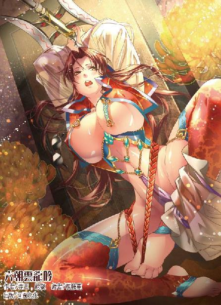

第40集·佛门辛秘
临安篇（9/10）
出版日期：2012-12-13
【本集内容简介】
小瀛洲一战，郭大貂珰身受重创，不料太皇太后对伺候自己三十余年的老太监弃如敝履。程宗扬好心想替郭槐养老送终，谁知太皇太后却要求程员外先纳下一房小妾？
股东大会日期渐近，星月湖、建康纨绔、筠州商号三路人马先后到来，更有金兀术的叔公随队而至，这位“兽蛮族中最伟大的术者”，一见面居然对程员外做了什么！
各路豪杰纷纷到场，翠微园固若金汤，程宗扬志得意满之际，不料后院起火，李师师忽然失踪不见了？！
※ ※ ※ ※ ※

封面人物：月霜
临安。西湖，翠微园。
沿湖一段粉白的短墙垂满藤萝，叶间开着淡黄的木香花。透过扇形的窗孔，能看到两个少女并肩坐在花墙下，絮絮私语，旖旎的风景宛如图卷。
“‘风住尘香’一阙，是表姐在燕尾洲闲居时写下的。”王蕙道：“当时姐夫出知湖州，相隔千里，李家表姐独守空房，只能以诗词自娱，才有了这阙《武陵春》。”
“物是人非事事休，欲语泪先流……”李师师吟哦着词中的句子，轻叹道：“易安居士夫妻和睦，志趣相投，也免不了这些伤感。”
王蕙暗叹一声，拉住她的手，“实话告诉你吧——那日姐夫来信说，已经在湖州新纳了两房小妾。表姐接到家书，虽然不至于以泪洗面，但也郁郁寡欢。”
李师师讶道：“既然两情相悦，为何便要纳妾？”
王蕙低声道：“表姐身为女子，纵然才华满腹，可年华日老，免不了色衰爱驰。何况她成婚多年，一直未能生育……”
李师师怔了半晌，自言自语道：“以易安居士的才华，身为女子，也难逃这般宿命吗？”
“男人三妻四妾，事属平常。可哪个女子愿意丈夫另有新欢呢？”
李师师愁绪满怀，半晌才勉强笑道：“我瞧秦先生倒是好的。”
王蕙小声笑道：“既然遇到了我，少不得让他从一而终。”
李师师虽然在笑，眼中却没有多少信心。
王蕙道：“我找匡神仙看过，匡神仙说我们夫妻也是命中无子。”
李师师一惊，“真的吗？”
“江湖术士之言，未可全信，也不可不信。”王蕙娇俏地伸了个懒腰，轻声笑道：“无子又有何妨？先兄早逝，留下个遗腹子，我告诉他，要说服娘家娶我也容易，只需把熺儿过继来，改姓秦便是了。”
“秦先生答应了吗？”
王蕙吃吃笑道：“哪里由他不肯呢？”
“姐姐的手段让人好生佩服。”说着李师师露出一丝苦笑，却是知道王蕙的手段自家学不来。世间男子虽多，能有几个连绝嗣都不在乎呢？
王蕙见她还是不悟，不由心下暗叹。她眼珠一转，笑道：“说到这里，还有件事呢。当日在晴州，表姐曾经遇到一个女子，欲将毕生所学倾囊相授。那女孩却说，在书院求读只是识几个字，将来持家时能记账罢了，诗词曲赋虽是雅事，终究非女子所宜，竟然不肯就学。”
“竟有此事？”李师师又是诧异又是惋惜，“易安居士的诗词，一卷青史几人能及？她居然不肯去学？”
王蕙道：“青史几行名姓，便胜得过小门小户的家室之乐吗？”
“哪里便不及呢？”
王蕙没有回答，而是轻声吟道：“去年元夜时，花市灯如昼。月上柳梢头，人约黄昏后……”
李师师不由怔住，这首词她早已耳熟能详，王蕙吟罢上阙，下半阙的文字已涌至心头：今年元夜时，月与灯依旧，不见去年人，泪湿春衫袖。
朱淑贞也是难得的才女，命运却远不及李清照，嫁了个俗夫，泪尽而逝。如果让她来选择，也许宁可放弃自己夺目的才华，换以平庸而快乐的生活。
李师师对易安居士的诗词倾心折服，可这时听王蕙说起家事，“青史留名”与“家室之乐”，一时间竟不知孰是孰非。
王蕙半是调笑半是认真地说道：“话说回来，只要能一世安稳，便是只知皮肤滥淫的俗物，也未必不是佳偶。何况——家主虽然有寡人之疾，也不见得就是那等浅薄之徒。”
李师师玉脸顿时红了起来，“姐姐说哪里话？家主与我何干？”
王蕙促狭地眨了眨眼，“真的吗？妹妹当日弃师离家，何其之勇，如今又何其之怯？”
纵然李师师冰雪聪明，此时也无言以对。她望着窗外湖水上的浮萍，不觉已是愁肠百结。
※ ※ ※ ※ ※
程宗扬不知道两女在花下的私语，他这会儿正扶着“不小心”扭伤脚的阮香琳，带着满脸憨厚的笑容，一副谁都能啃的肉包子模样。
看到天香水榭，阮香琳眼中露出一丝尴尬，随即又装作若无其事。
程宗扬佯作不知地把阮香琳扶进水榭，送到坐榻上，然后道：“夫人少坐，我去沏杯茶来。”
阮香琳柔声道：“怎好再麻烦公子？”
“不麻烦，不麻烦。”
程宗扬热情地自去倒茶，阮香琳坐在椅中游目四顾，这水榭她原是来过的，想起当日的事，不免有些心虚，看了几眼，便垂下头，装出娇弱的样子。
屏风后飘来茶香，片刻后，程宗扬端了茶过来，笑道：“这是御用的龙凤团饼，正好前些天有客人送来几饼，夫人尝尝。”
阮香琳心头微动，竟然是御用的茶饼，这年轻人来往的客人却是非富即贵。
阮香琳饮了一口，果然香气扑鼻，不由赞道：“好茶。”
那年轻人坐下来，和气地说着话。话题无非都是生意，绕来绕去说了一刻钟，始终言不及私。
阮香琳暗暗心急，趁程宗扬说得口干，举杯饮茶的工夫，扬起玉颈，一手在胸前扇着风，柔声道：“好热……公子这里可有扇子吗？”
程宗扬一拍额头，“我怎么忘了？”说着从袖中取出折扇，递了过来。
阮香琳为难地说道：“折扇是男人家用的……公子可有团扇吗？”
程宗扬恍然大悟，起身道：“我去找找。”
趁程宗扬绕到屏风后，阮香琳飞快地将衣领的纽扣解开两颗，露出胸前一片白腻的皮肤。在水榭中坐了一会儿，她也着实热了，若不是为着矜持，直想除了衫子，只留下贴身的小衣。
片刻后，程宗扬拿了柄小小的团扇过来。阮香琳接过扇子，轻柔地扇着风，一双妙目如水般在程宗扬身上打着转。
那年轻人借着喝茶掩饰，一双眼睛却不停偷瞄她的玉颈。阮香琳心下暗笑，正要开口，却听他干咳一声，说道：“方才说到如今的粮价——今年粮价比往年足足高了六成，一是夏粮收成不好，其次是朝廷推行的方田均税法，各地富户唯恐被官府强买良田，宁愿抛荒，也不肯耕种……”
阮香琳听得发急，只觉阁中越来越热，手里团扇摇得蝶翅一般，还禁不住香汗津津。这程员外枉自担了个好色贪花的名头，却是个绣花枕头，不解半点风情。
眼见他又要长篇大论，说起宋国的粮铁价格，阮香琳忍不住道：“程公子，奴家脚踝痛得厉害，能否帮奴家揉揉？”
程宗扬一脸憨厚地说道：“啊？好啊。”
阮香琳就等他这句话，轻轻翘起纤足，放在程宗扬腿上。
程宗扬摘下她的绣花鞋，张手握住她的玉趾，温暖的触感使阮香琳娇躯轻轻一颤，身子升起一股异样的温热。
程宗扬一手握着她的足尖，一手托着她的足跟，缓缓扭动着，给伤处活血。阮香琳用团扇遮住口鼻，只露出一双美目，火辣辣地看着程宗扬。
可她这番俏媚眼全作给瞎子看了，那年轻人竟是个榆木疙瘩，只一脸憨厚地朝她傻笑，没有半点非礼的意思。
阮香琳又是着急又是好笑，世上居然还有这种呆子，真不知道梁夫人是怎么和他做成好事的，难道生米做成熟饭，盛到碗里放在眼前，他才知道吃吗？
阮香琳柔声道：“公子一人在外，难道没有妻室随行吗？”
程宗扬一脸不好意思地说道：“我还没娶亲呢。”
“是吗？”阮香琳瞬了瞬美目，轻笑道：“莫非公子看中了梁夫人？”
程宗扬尴尬地说道：“她只是请我帮忙办点事。”
阮香琳娇笑道：“若是奴家请公子办事呢？”
程宗扬立即露出一副商人市侩的嘴脸，“只要夫人出得起价钱，什么生意都好说！”
阮香琳心下暗啐一口，眼中却露出幽怨的眼神，“奴家流年不利，至今还欠了钱债，哪里出得起钱呢？”
“这样啊……”程宗扬仰着脸想了一会儿，却不见下文。
阮香琳等了半晌，眼珠一转，一手捂着胸口道：“哎哟……”
“夫人怎么了？”
“奴家心口痛，”阮香琳皱着眉头道：“公子帮奴家揉揉可好？”
“好啊。”
“这里？”
“旁边一点……”
阮香琳扶着程宗扬的手腕放在自己双乳之间，腻声道：“轻着些……”
程宗扬手掌在她乳沟间揉着，脸色越来越红。
阮香琳一手摇着团扇，将自己的体香扇到他鼻端，一边道：“公子的手好暖和呢。”
“夫人的胸……好大……”
阮香琳暗暗舒了口气，这呆子终于开窍了，口中却道：“哪里有梁夫人的大呢？”
程宗扬“嘿嘿”笑了两声，却不答话。
阮香琳这会儿身上香汗淋漓，肌肤一片火热，索性揭开伪装，媚声道：“公子可想揉揉吗？”
“在下……在下正帮夫人揉着……”
“奴家说的是这里……”
阮香琳玉腿一合，两条丰满而又圆润的大腿夹住程宗扬的手臂，一边挺起小腹，在他臂上柔柔摩擦了一下。
那年轻人像是吓了一跳，半晌才道：“夫人……是让我揉这里？”
阮香琳水汪汪的美目瞟了他一眼，“你想揉哪里便揉哪里。想用什么揉，便用什么揉……”
“这……这不好吧……”
阮香琳柔声道：“公子肯送奴家来家里，又给奴家揉足摩胸，足见公子心存仁厚，是个难得的好人。纵然不能终身相托，想来公子也不会负了奴家。”
程宗扬心虚地说道：“可你是……你是师师的娘……”
“那又如何？”阮香琳用团扇掩口轻笑道：“奴家只是见公子独身寂寞，为公子排忧解闷，又不会与女儿争宠。”
程宗扬小声道：“你这是红杏出墙啊。”
“天知地知你知我知，哪里会有旁人知晓？”
程宗扬唇角露出一丝笑意，接着越来越大，最后哈哈大笑起来。
在阮香琳惊疑的目光下，坐榻后方的屏风忽然分开，露出两个人影。
阮香琳瞪大眼睛，失声道：“阿凝！”
失踪多日的妹妹竟然在自己最不愿被人见到的时候出现，想到自己方才的作态，阮香琳羞窘得恨不得有条地缝可以钻进去。
但更让阮香琳羞愕的，则是妹妹的衣着。这位八十万禁军教头的正室娘子，这会儿就像娼妓一般，身上只有几片小小的布料，全加起来还没有手掌大，身体几乎全裸。她白美的胴体曲线动人，肌肤脂香玉滑，白得耀眼，只是她颈中却系着一条链子，这会儿四肢着地趴在地上，伏在一个美貌道姑脚旁。
阮香琳脸色时红时白，不住变幻，她扭过头，看到程宗扬戏谑的眼神，终于意识到自己上了这个年轻人的当。一想到自己刚才那番言辞都被妹妹和陌生人听得一清二楚，阮香琳不禁无地自容，急忙掩住衣襟，一手扶着座椅，起身欲走。
“想走吗？”那道姑轻笑一声，抬掌按住阮香琳的肩头。
她那一掌看似轻柔徐缓，可阮香琳用尽浑身解数，仍被她轻易按住，接着便半身酸麻，无力地坐回椅中。
阮香琳惊骇欲绝，她本身修为已自不低，谁知这道姑出掌时看似平淡无奇，修为却高得惊人，一掌拍下，真气沿着自己的经脉直入丹田，将自己的气海牢牢封住，而且气息纯正，竟然是正宗的道门玄功。
程宗扬笑道：“阮女侠何必着忙呢？”
阮香琳接连催动真气，丹田却像凝固一般，毫无反应，她压下心底的恐慌，勉强说道：“奴家……该回去了。”
望着阮香琳惊惶的眼神，程宗扬露出一个莫测高深的微笑，“阮女侠，想让我把你干的丑事一件件摆出来吗？”
阮香琳脸色发白，最后还是咬着牙关低声道：“奴家……不知道员外说的什么意思。”
程宗扬笑道：“这天香水榭想来阮女侠不陌生吧？当日阮女侠在这里独战群雄……啧啧，那一幕好生香艳呢。”
阮香琳只觉身下升起一股寒意，禁不住颤抖起来。
“还有……”程宗扬道：“那日和陆虞侯一道，赤条条被吊在树上的不知又是谁呢？”
阮香琳失声道：“你怎么知道？”
程宗扬托起阮香琳的下巴，“我如果告诉你，当日把你救下来送到客栈里的就是我呢？”
阮香琳像被兜头浇了盆冷水般僵住，呆呆看着这个男子。
“偷情算不得什么，想给你男人讨个官当当——这点儿心思也算不得什么。但是，”程宗扬竖起一根手指摇了摇，“把我当成傻子，装模作样来骗我，就是你的不对了。”
卓云君道：“何必和这贱婢饶舌？待奴婢封住她的穴道，主子爱怎么受用便怎么受用。”
程宗扬大摇其头，“那和奸尸有什么区别？一点情趣都没有。”说着他叹了口气，“我本来想帮阮女侠把那十万贯的债免掉，阮女侠既然执意要走，就找高衙内慢慢还吧。”
眼看程宗扬转身要走，阮香琳急忙道：“等等！”
程宗扬回过头，笑着扬了扬眉毛，“阮女侠想通了吗？”
阮香琳终于失去信心，她用心布了局，指望钓一只金龟婿，谁知这金龟婿倒是一钓就上，钓上来的却是吞舟之鱼，半点由不得自己。如今自己把柄落在他手中，反而被他牢牢拿住。
阮香琳讷讷地难以开口，可那年轻人只戏谑地看着自己，摆明了让她自己说出回心转意的话来。
阮香琳只好垂下头，低眉顺眼地柔声说道：“都是奴家的不是，还望公子原谅奴家则个。”
看着阮香琳英姿飒爽的面孔，程宗扬心里道：真是人不可貌相。虽然她是在不知情的情况下受了嫡亲妹妹的蛊惑，但若非她心底对功名利禄的热切，也不至于作茧自缚，越陷越深。
“阮女侠刚才说的话——这会儿不会是想反悔吧？”
阮香琳咬了咬唇瓣，满面羞红地说道：“奴家……从了公子便是……”
说到后来几个字，阮香琳声如蚊蚋，如果不是程宗扬耳力够好，几乎就错过去了。刚钓上来的鱼，不好逼得太紧。程宗扬大笑两声，大模大样地张开双手，卓云君过来，俯下身帮他解开衣带，除去外衣。
看着他的举动，阮香琳有些着慌，小声道：“去房里吧。”
程宗扬一脸无所谓地说道：“这里多好？又宽敞又亮堂。”
卓云君笑道：“阮女侠有些害羞呢，奴婢来帮帮她。”说着拉起阮香琳的双手，在头顶交叠起来，按在榻上。
阮香琳丹田受制，真气难以催动，单论体力，与平常妇人也相差无几，被卓云君一按，便难以动弹。
她玉脸通红地央求道：“不要……这种事怎好在人前来做……”
“哦，你是不好意思被别人看到啊。”程宗扬笑道：“凝奴，让阮女侠看看你的花儿。”
阮香凝含羞看了姐姐一眼，然后转过身，顺从地抬起玉指，将细如系带的丁字裤褪到臀下，然后分开白嫩的臀肉，将股间那只娇滴滴的妙物展露出来。
阮香琳羞急地说道：“阿凝，你！”
卓云君笑道：“妹妹的花儿已经看过了，这会儿该看姐姐了呢。凝奴，来帮帮姨妈。”
两女一个按住阮香琳的双手，一个去解她的衣裙。阮香凝的丁字裤褪到膝间，她跪在地上，翘着雪臀先抽出阮香琳的衣带，然后解开她的裙子，将里面一条薄纱亵裤扯了下来。
卓云君一手按着阮香琳，一手拽开她的衣襟。只见这少妇贴身穿着一条翠绿的肚兜，肚兜末端覆盖在双腿间的兜角已经透出水痕，湿淋淋地贴在秘处。
阮香凝扬起脸，笑靥如花地娇声道：“姐姐已经湿透了呢。”
“主子还未碰她，就湿成这般，”卓云君嘲讽道：“一个骚浪的淫材儿，偏还装模作样。”
阮香琳面红耳赤，一边并紧双腿，一边屈膝遮掩羞处。
程宗扬抱肩看着这香艳的一幕，没有一点插手的意思。这些女人间的勾心斗角，只要不闹得太过火，他不会出手去管——真是闹得太过火，还有死丫头呢，也用不着自己去管。
阮香琳虽然勉强遮掩羞处，终究挣不过她们两个。没多久，阮香琳仅剩的肚兜也被扯下，一丝不挂的玉体横陈榻上，宛如一段白藕。
卓云君和阮香凝一边一个将她白美的双腿朝两边拉开，对着主人的视线，将她下体的秘处展露出来。
阮香琳的玉户像鲜花一样绽开，乌亮的阴毛已经被淫水湿透，湿淋淋贴在肌肤上，两片娇美的阴唇早已充血胀起，柔嫩的蜜穴张开一个小指粗的肉孔，阴中淫水四溢，红腻的蜜肉裸露在空气中，随着心跳微微颤动着，散发出水灵灵的光泽，娇艳无比。
“好个可人儿的妙物。”卓云君笑道：“这淫浪模样比凝奴还胜过几分。”
阮香凝道：“奴婢怎及得阿姐的阅历？”
“方才阮女侠说，主人想揉哪里便揉哪里，爱怎么揉便怎么揉……”卓云君笑吟吟道：“凝奴，你说揉哪里？怎么揉？”
阮香凝媚声道：“便用主子的大肉棒揉阿姐的小嫩屄好了。”
“阮女侠，你说好不好？”
阮香琳听着两人的奚落，羞得无地自容，只能满面羞赧地咬着唇，身体因为羞耻而紧张得微微发抖。当那个年轻人扔下衣物，露出精壮的肌肉和那根怒胀的阳具，阮香琳只觉呼吸一窒，接着下身涌出一股热流。
在众人嘲笑的目光下，阮香琳难堪得几乎晕厥。平心而论，她并不是一个沉溺欲海的荡妇，对男女上头的需求也不甚多，与丈夫一两个月也未必同房一次。
当日的荒唐，只是用身子换取富贵的交易。谁知在这男子面前，自己却如思春的少妇一般，只闻到他身上的雄性气息，便无法克制地淫水四溢。
阮香琳只觉所有人的目光都集中在自己羞处，接着那根火热的阳具伸来，在自己亲妹妹和陌生人的注视下，顶住自己柔腻的肉穴，然后缓缓进入。
穴口微微抽动着，淫液泉水般流淌出来，打湿了那根粗硬的阳具。阮香琳浑身战栗，自己最羞耻的部位暴露在每个人的视线下，被人一点一点地插入。他缓慢的动作使阮香琳感觉这一刻的羞耻仿佛被无限拉长，让她永远无法忘掉自己在众人围观下被人侵犯的场景。
程宗扬托起她丰腴圆润、肉感十足的大白屁股，然后猛然一挺腰身，阳具重重贯入蜜穴。龟头在湿腻的肉穴中长驱直入，直到顶住蜜穴尽头的一团软腻。
程宗扬一枪入洞，随即赤身力搏。他微微俯着身，阳具像铁棒一样在她蜜穴内狂进狂出，攻势密集而凌厉。
阮香琳并不是未经人事的处子，然而那年轻人的粗硬和迅猛却带给她一种完全不同的感受，他身上洋溢着雄性的气息，小腹轮廓分明的肌肉有力地收缩、绷紧，充满逼人的力度。
那根坚硬的阳具时进时出，抽出时冠沟刮着肉壁，仿佛要把多汁的蜜肉带出体外，插入时就像打桩一般，沉甸甸从穴口直入花心，就像要把自己肉穴整个挤入体内。随着他的抽送，阮香琳的身体也迅速生出反应，肉穴尽头秘藏的花心吐露出来，暴露在阳具下，龟头重重捣在上面，带来入骨的酸麻和酥软。
按住自己手脚的手掌忽然松开，阮香琳双手甫得自由，立即本能地搂住那个年轻人的腰背，一边挺起下体，迎合他的进出，喉中发出柔腻的低叫。
卓云君嘲讽道：“阮女侠这样子可不好让师师姑娘看到。谁能想到堂堂阮女侠会和娼妇一样，在别的男人身下摇屁股呢？”
阮香凝也露出半是惊愕半是羞涩的神情，显然没想到姐姐会如此淫浪。
程宗扬道：“看到又如何？阮女侠又不是不解风情的小女孩，对不对？”
卓云君掩口笑道：“将来主子若是收了师师姑娘，母女共侍一夫，那可不是乱伦吗？”
听到“乱伦”两个字，阮香琳像被针扎到般浑身一颤，但接着那根阳具猛地捅入，阮香琳又情不自禁地弓起纤腰，丰秾香艳的肉体紧贴在那年轻人胸前，像触电一样不住颤抖。
“别乱动，让在下给阮女侠好好揉揉。现在还有点紧呢，什么时候把你揉得浑身发软，连爬都爬不起来，才是揉好了。”
失身的羞耻被肉体的快感所压倒，阮香琳顾不得旁人的目光，在那年轻人身下娇喘起来，那只丰满圆翘的大白臀被他抱在手中，就像一只充满弹性的雪团，随着他的捣弄乱颤着不住变形。湿淋淋的淫液泉水般从穴口泄出，带着女性淫媚的气息，水汪汪地流淌下来。
阮香琳神思昏然，脑中只剩下那根火热的阳具，和它雨点般密集地在自己花心撞击的震颤。快感潮水般一波波涌来，肉体仿佛在没有尽头的欢愉中融化。
不知过了多久，阮香琳快感越来越强烈，连媚叫声也变得断断续续，忽然蜜穴一紧，柔腻的肉洞如小嘴般夹住阳具剧烈地抽动起来。
程宗扬在她痉挛的体内奋力抽送片刻，才搂紧她软泥般的身子，在她蜜穴深处喷射起来。
雨收云散，阮香琳一手用团扇掩住通红的面孔，一手微颤着勉强掩住火辣辣的穴口，眼中露出少女般羞涩的神情。
即使已经有了一个成年的女儿，这样剧烈的性交仍让阮香琳感受到从未有过的吃力。这短短半个时辰，却比竞夜交欢更令人疲惫，所带来的快感也无与伦比。
但更令她刻骨铭心的，则是一件又一件羞耻之事接连发生。
有心勾引却被人揭破隐私……光天化日之下与人交欢……被人围观……无法自制的肉体反应……还有母女共侍一夫……
卓云君一边帮主人抹拭身体，一边在他身上推揉，缓解主人的劳累。
旁边阮香凝摘下姐姐手中的团扇，一边帮她打着扇，一边柔声劝解道：“这里我和卓妈妈都是女子，只有主子一个男人，姐姐有什么好害羞的？”
看着妹妹光彩夺目的面孔，阮香琳忍不住道：“你为何会在这里？”
阮香凝露出一丝恰到好处的悲伤，“姐姐也知道奴家的相公得罪了当朝的高太尉。若非主子好心搭救，妹妹纵然能保住性命，也免不了流落到烟花之地，任人践踏。”说着她展颜一笑，“幸好蒙主子收留，给了妹妹一个存身之地，主子的恩德，奴家今生今世也难以偿还……”
阮香琳小声道：“可你是八十万禁军教头家的娘子。”
“姐姐还记得魏篝侯的夫人吗？有名的南苑一支花。眼下还不是成了梁公子的奴婢，一朵鲜花任人采，哪里还有半点名节？”阮香凝道：“何况公子从不让我等宴客，只是内房专宠，比一般豪族的姬妾还高出几等。将来若是师师……”
一说到自家女儿，阮香琳脸又红了，听阮香凝道：“……将来若是师师嫁入主人家里，也是我们各自的姻缘，哪里便是乱伦呢？”
听着妹妹的解劝，阮香琳心里仿佛打翻了五味瓶，说不出是什么滋味。她偷眼望着程宗扬，却见那个年轻男子一边露出戏谑的眼神，一边对旁边的女子道：“卓美人儿，阮女侠好像也有一只上好的鼎炉呢。只不过比妹妹差了些。”
卓云君笑道：“美玉无人拂拭也会蒙尘，主人往后多加擦洗便是了。”
“那我就再洗一遍……阮女侠，换个姿势，再来一遍！”
“不要……哎呀！公子轻些，奴家下面快要肿了……”
※ ※ ※ ※ ※
临安。大内，万寿宫。
程宗扬一早便赶到大内，可他来的不是时候，通报时宋主刚入宫给太皇太后请安，自己只好在宫外的偏殿等候。
童贯一边给程宗扬捶着肩，一边道：“也就是员外有这面子，通了名就能传见的。换作旁的大臣，便是贾相爷，也被拂过面子。”
“贾太师常来吗？”
“也不常来。一年最多一两次。但陛下不喜欢见他，通常都是来觐见太皇太后。”
“郭公公还好吗？”
童贯低声道：“小的听说郭公公是被打发出去看守皇陵了。至于是哪处皇陵，小的却不知道了。”
程宗扬沉吟了一下，“你如今在哪儿当值？”
童贯道：“小的每隔两日在垂拱殿伺候。”
“不是在选德殿吗？”程宗扬道：“我记得你上次在选德殿。”
“员外说的再对也没有了。”童贯赔着小心道：“朝中的规矩，大朝会在崇政殿，常朝在垂拱殿。一般召见臣子议事是在崇政殿旁边的延和殿，又称便殿。便殿形制太小，里面和平常人家差不多大，连陛阶都只有一级，多几个人便坐不开。陛下嫌气闷，才改在选德殿。”
程宗扬明白过来，大朝会相当于举行全体员工大会，偏重于礼仪性质，在崇政殿举行；常朝是经理人会议，各部门负责人汇报各自的工作，在垂拱殿举行；选德殿则相当于董事长办公室。这三处殿宇，哪一处更重要不言而喻。童贯原来是选德殿的小黄门，如今在垂拱殿当值，其实是被贬了。
“没有进万寿宫伺候？”
“万寿宫是太皇太后的寝宫，小的只是不当值的时候在外面跑个腿。宫里都是用了几十年的老人，一时轮不到小的伺候。”
“长公主呢？”
“长公主……”童贯想了一会儿，“小的有次去云涛观搬花盆，远远见过长公主一眼。再近些就没有了。”
“云涛观？”程宗扬听着有些耳熟，琢磨了一会儿，猛地坐了起来，“云涛观在宫里？”
童贯连忙道：“在南屏山，宫里的贵人闲暇时常往观里游玩。”
程宗扬皱起眉头，死丫头这是搞什么鬼？难道她也知道了梦娘的身份？可她让卓云君去观里做什么？
童贯看了看天色，“时辰差不多了，陛下应该已经请过安了。”
程宗扬站起身，走到殿门处对童贯道：“用金铢有些扎眼，这样吧，得空你去钱庄的柜上，支一千贯，平常买些小礼物，给宫里的贵人和当权的大貂珰们送些孝敬，想办法换换位置，最好能去选德殿伺候笔墨。明白了吗？”
童贯又惊又喜，连忙趴下来道：“奴才明白！”
程宗扬道：“宫里的事我不会帮你，遇到什么麻烦，自己解决。但凡用钱的地方，你便去找秦先生。”
童贯大喜过望，“是！”
※ ※ ※ ※ ※
宫中陈设依旧，只是太皇太后的贴身太监换了一张陌生面孔。那太监身材高瘦，一张脸木木讷讷，毫无表情，但脚步沉稳，显露出不逊于郭槐的修为。
程宗扬一见之下便留了心。说来好笑，自己接触的宋国文武都是奸贼居多，宫里的太监却是文武双全、藏龙卧虎，不管是外放领兵作战，还是宫里伺候的，都很有几下子。真应了那句笑话：朝廷的官员都是酒囊饭袋，干活只有大内的公公们才靠得住。
宋宫的太监都像哑巴一样，引程宗扬入殿时一句话都不说，还是程宗扬主动询问，那太监才说自己叫陈琳，资历虽然不如郭槐，但在太皇太后身边伺候也有三十年了。
太皇太后正在用汤，见程宗扬进来便笑道：“今日来得倒早。”
“一早就念着给姨娘请安，怎敢来得晚呢？”
“好个油嘴的小子。”刘娥笑着嗔怪道：“你房里有了新人，哪里还记得老身？”
程宗扬暗暗叫苦，皇城司竟然这么厉害？自己刚搞上阮香琳就连太皇太后都知道了，往后哪儿还能瞒住李师师那丫头。
他干笑道：“姨娘怎么知道的？”
太皇太后扬声道：“小陈子。”
“是。”陈琳拿起一份札子，打开来，面无表情地念道：“臣某某某弹劾工部员外郎、客卿程宗扬勾结官员，强抢民女，巧取豪夺诸事札子……”
这札子远不如当日攻击贾师宪的华丽，但大小十几项罪名一鼓脑砸过来，让头一回见识这种阵仗的程宗扬也禁不住一阵心惊肉跳。
只不过听下去，程宗扬却越来越觉得稀奇，札子里的罪名有三分真的，可内容却是十足的假货！比如说他在筠州勾结官府，内容却是买卖良田、私下贩盐，甚至还有强抢民间女子、逼良为娼这些天怒人怨的勾当——怎么听都像是哪个闲极无聊的家伙在编小说，只不过主角用了自己的名字。
好不容易等陈琳念完，程宗扬大叫一声：“冤枉啊！”
见他七情上脸的模样，太皇太后忍不住笑出声来，“你这猴子也有今日？”
“姨娘！这札子说我在筠州勾结知州滕甫，大肆买卖良田，私自贩盐，牟取暴利，甥儿敢以性命担保，绝无此事！还有强抢民女，逼奸行淫，贩卖人口，逼良为娼，草菅人命……敢问是谁递来的札子！我愿意与他当面对质！”
陈琳道：“陛下方才带来这份札子，名字已经事先涂掉了。”
太皇太后道：“陛下也知道这上面多是不实之辞，涂掉名字是不想旁人再纠缠此事。至于把札子放在这里——无非是让老身叮嘱你一声，行事谨慎些，莫让人捉到把柄。”
程宗扬义愤填膺地说道：“可这上面全是谣言！这么大的屎盆子就往我头上扣，上札子这狗东西是失心疯了吧！”
太皇太后笑着瞥了他一眼，“昨晚的新人是怎么回事？”
程宗扬尴尬地咳了两声，“逢场作戏的事，当不得真的……”
太皇太后笑吟吟道：“你既然叫我一声姨娘，老身也算是你的长辈，新人进门，怎么能不来拜见老身呢？”
程宗扬只好道：“不敢瞒姨娘，那是个有夫之妇……”
“有夫之妇？”刘娥笑靥如花地说道：“那更应该带来让老身见见了。”
程宗扬苦笑道：“不用吧？”
刘娥语重心长地说道：“你还年轻，不知道这种在外面勾三搭四的有夫之妇最不安分，多少人家家室不宁，都是这种妇人搞出来的。她们或是贪图财物，或是攀附权贵，或是爱慕男色。你若能丢开，便早些丢开。若是丢不开，不若纳了当妾侍，用名分拴住她的心。改日带了来，让老身给她讲讲规矩。”
程宗扬没想到姨娘这么热情，不禁有些傻眼。难道自己真把阮香琳纳了当小妾，还带到宫里来学规矩？
太皇太后也想到此处，“带来宫里来总归不大妥当——小陈子，明日老身往云涛观，你去知会一声，仪仗就免了。”
陈琳躬身道：“是。”
程宗扬连忙道：“姨娘，这不好吧？”
“哪里不好了？”
“逢场作戏也就算了，我还没娶亲呢，怎么好把一个有夫之妇娶进门？而且小甥受的教育是一夫一妻……”
太皇太后讶道：“当然是一夫一妻。一个正头娘子是当家的，几个姬妾不过是有个名分让你受用。这么不清不白的，岂不有失你的身份？”
程宗扬只好道：“能不能缓几日？这几天钱庄的事实在太忙。”
“小陈子，查查吉日。”
陈琳翻了翻黄历，“十八是个吉日，宜婚娶纳妾。”
“那便是十八吧。”
程宗扬这次入宫本来是想旁敲侧击，打听一下媛公主的事，结果被太皇太后这番话说得半点心思也无，只好苦着脸道：“便依姨娘的吩咐，过几日我带她到云涛观拜见姨娘。只不过纳妾就不必了吧？毕竟她还有夫家。”
太皇太后道：“有夫家又如何？纳妾又不是娶正房娘子，私下纳了便是。”
岳鸟人啊，母仪天下的太皇太后都被你教成什么样了……
程宗扬拗不过她，只好答应下来，苦笑着说道：“其实甥儿这次入宫，是想请姨娘下道旨意。”
刘娥笑道：“什么旨意？”
※ ※ ※ ※ ※
群山合抱间，座落着一片巍峨的殿宇，夕阳下显露出不逊色于皇宫大内的金碧辉煌。不过这些殿宇住的并非活人，而是死人——这里是历代宋主的皇陵。
在陵园后方的一排小房子，是守陵人的住所。为了避免惊扰长眠的君主，守陵人的房舍都没有窗户，只在背阴处开了一扇小门。程宗扬风尘仆仆地进了门，立刻皱起眉头。
虽是夏日，从未见过阳光的房内却又湿又冷，空气中弥漫着污浊的气息。相比于不远处的殿宇，这里更像是阴冷的坟墓。
程宗扬躬下身，望着榻上一个佝偻的身影。
郭槐本来就不高的身材似乎小了一半，朽木般又干又瘦，肩上的绷带不知多久没有换过，污血与衣服黏在一起。旁边一碗稀粥早已凉透了，上面还飘着几只苍蝇。
便服打扮的封德明脸色阴沉，垂首立在程宗扬身后。倒是守陵的一个小臣趾高气昂，因为自己文官的身份，对这些太监丝毫不放在眼里。
他踢了踢竹榻，“起来！起来！”
郭槐勉强睁开眼睛，露出浑浊的目光。
“奉太皇太后慈旨！恩准内宫太监郭槐还乡。”那小臣宣完口谕，面无表情地说道：“姓郭的，走吧。”
郭槐费力地咳嗽着，喉咙像风箱一样嘶哑地说道：“哪里去？”
“本官管你往哪里去！”小臣呵斥道：“你已经被打发出宫了！这皇陵是你待的地方吗？还不快走！”
郭槐挣扎着想爬起来，但他重伤之余，半边身子都几乎废了，几次使力都未能撑起身体。
忽然旁边伸来一双手臂，稳稳把他扶了起来。
程宗扬微笑道：“我来接公公回家。”
金兀术像抱着一捆枯柴一样把老太监抱上马车，厚厚地盖了条狐裘。封德明退后一步，趴下来向程宗扬磕了个头，“老奴替郭公公谢过公子。”
程宗扬扶着马鞍道：“不敢当。郭公公服侍姨娘多年，如今年纪大了，我这个做外甥的给他养老也是应当的。”
封德明不再多言，又重重磕了个头，这才默默起身离开。
程宗扬在风中立了片刻，然后翻身上马，“送郭公公回翠微园，我去城里一趟！”
※ ※ ※ ※ ※
程宗扬耐心地等了半个时辰，换作便服的苏佳朴终于出现。
高俅喝了口蛇麻酒，“怎么不叫桂儿和娇儿过来服侍？”
程宗扬一边拿着铁皮壶给他添满，一边道：“事情有点大条，我连自己的手下都没敢说。”
高俅从容拿起雪茄，“说来听听。”
“陛下没奶妈。”程宗扬道：“宫里丢的是长公主。”
房间里一阵沉默。程宗扬喝着微苦的啤酒，一边看着对面的高俅。按他的说法，梦娘是宋主的奶妈，因为宋主至今未曾娶亲，高俅怀疑宋主与奶妈有私，自作主张只要能找到梦娘，生死勿论，以免丑闻泄漏。但程宗扬现在知道梦娘的真实身份是宋国的长公主，宋主的姑母，高俅借机除掉她的理由根本就不成立。
程宗扬曾想过不揭破此事，给高俅留点秘密。但陆谦临死前那句话让他警惕起来——梦娘身上有着关系宋国存亡的大秘密！
程宗扬不得不想到，这个秘密也许才是剑玉姬退出宋国的真正理由。随着股东大会日期临近，自己马上要离开宋国，赶往苍澜的太泉古阵，留下这个炸弹，一个不小心，很可能就把自己炸得尸骨无存。
高俅慢慢喝着蛇麻酒，然后喷了口雪茄，淡淡道：“御史台有人上书要弹劾你。”
程宗扬道：“我已经见到了。写札子那人真是疯了，没影儿的事都往我身上乱扯。”
“那札子是我写的。”
程宗扬怔了半晌，苦笑道：“算我没说。”
“是陛下让老夫写的。”
程宗扬这下真愣住了。
高俅道：“你在朝中倒还本份，只是钱庄风头太盛，引得无数人眼红。若是有人想从你身上捞功名，真要找出几桩不大不小的实事弹劾，不仅让你灰头土脸，也会让陛下难做。如今有人抢先上书，陛下又表明态度保你，再有人眼红，也知道掂量掂量其中的分寸。”
“陛下让你上书弹劾我，是为了保我？”
“陛下向来‘以德治国’。”高俅重重吐出最后四个字，然后道：“真要有人抓到你的把柄，陛下也不好一味偏袒。如今先借此作好文章，那些御史也都是有眼力的，往后多少也能少些是非。”
程宗扬闭上眼思索半晌，终于想明白高俅为什么扯出这些不相干的话题。
“对长公主的格杀令，是陛下的意思？”
高俅没有点头也没有摇头，反而说起另一件不相干的事，“当年先帝驾崩，遗命传位于陛下。王禹玉是翰林学士，却不肯草诏。”
程宗扬喉头发干，意识到自己正在揭开宋国最深的秘密。
可高俅只说了一句便没了下文，程宗扬只好道：“陛下生母是谁？”
“韦太后。”
“陛下是哪一年继位的？”
“陛下继位时年满周岁，如今二十有二。”
“他父亲是谁？”
高俅沉声道：“当然是先帝！”
“那王禹玉为什么不肯草诏？”
高俅将半杯蛇麻酒一饮而尽，“先帝连生数子，均未满半岁夭折，传言宫中不利小儿，因此陛下自幼长在宫外，先帝驾崩前数日方才被太后召引入宫。”
“难道没有人怀疑吗？”
“内有皇后、皇太后，外有武穆王、贾太师。又有先帝口传遗诏，哪里有半点可疑？”
程宗扬皱起眉头，高俅虽然什么结论都没给，但吐露的内情已经足以让人浮想联翩。如果宋主是水货，最大的嫌疑人莫过于岳鸟人，可岳鸟人明明只能生女儿，哪里有儿子来冒充？
而且这件事贾师宪居然也有份，难怪他能独揽大权这么多年。可宋主的亲爹究竟是谁？这个秘密为什么会在梦娘身上？除掉梦娘的命令，真是宋主下的吗？这一连串的疑问让程宗扬如堕雾中。
“今朝有酒今朝醉！”高俅举起酒杯，“哪管明天喝凉水！来！”
※ ※ ※ ※ ※
回到翠微园，耳边便传来一声大叫：“师父！”
听到这声殷勤的招呼，就知道是高衙内来了。
程宗扬跳下马，“几天不见，又去哪儿风流了？”
高衙内眉飞色舞道：“城里的商户新贩来一批衣物，叫霓龙丝衣！说是拿极北之地采来的霓龙丝织成，红白蓝黑都有！又薄又透！穿在身上就跟画的一样！刚运来各处勾栏的粉头就抢疯了，没几日工夫便抢购一空。如今哪个粉头要是没件霓龙丝衣，都没脸说自己是勾栏的红牌！”
商人的嗅觉和反应果然是最快的，战事刚一结束，就有人把霓龙丝衣贩至临安。这东西对男人女人的杀伤力都是一流，那些商人少不得大赚一笔。
程宗扬随手把马鞭丢给高衙内，边走边道：“看件衣服用不了几天吧？”
“师父你不知道！那霓龙丝衣是贴身穿的，单是一条长筒丝袜，粉头翘着白生生的腿，穿上是一美，卷着一点一点脱下，又是一美！若是掏够了钱，让粉头穿着丝袜舞弄，两条又白又滑的美腿夹在身上，更是美到骨子里！更别说被粉头两只软绵绵的小脚夹住小弟弟，那个舒服……”
高衙内两手放在胸口，眯着眼如痴如醉。
“得了吧，这会儿还念着呢。”
“我还没说奶罩呢！还有内裤！以前的小衣是扒开内裤看屁股，这霓龙丝衣非得扒开屁股才能见着！”
忽然高衙内闭上嘴，露出色授魂与的表情。
李师师握着一卷诗册，满面绯红，显然是正在庭中论诗，却听到高衙内这番露骨的言语。
王蕙笑吟吟看了程宗扬一眼，挽着李师师离开。
程宗扬没好气地对高衙内说道：“把你的涎水擦擦！师师姑娘都进我的门里了，你还打什么主意呢！”
高衙内叫起撞天屈来，“徒儿要是对师师姑娘有半点歪心思，立马跳进湖里变王八！”他压低声音，“师父，旁边那小娘子是谁？好像刚开脸啊。”
“我说小崽子，你是专攻人妻熟女的吧？”
高衙内理直气壮地说道：“女人就跟桃一样，要熟的才好吃！上次我勾上手的那个，真和熟透的水蜜桃一样，一掰开就汁水淋漓……”
“停！越说你还越起劲儿了！”
两人进到厅中，高衙内殷勤地把马鞭挂到壁上，然后道：“师父，徒儿刚听说一桩好事，赶紧就来寻师父了。”
“什么好事？”
“城北有家木料行，原本生意不小，但年里沉了两条船，远洋贩来的木料都打了水漂，店里囤积的木料又在火灾前被人抢购一空，白丢了一桩大生意。前天好不容易卖了几根上等木料，谁知昨晚几个没良心的伙计卷了钱财跑了。眼看生意做不下去，掌柜的无奈之下，只好转让。如今店里还有些上等的木料，加起来大概有七八万贯，作价五万贯出手。”
“五万贯也不算太多嘛。衙内难道还拿不起？”
高衙内道：“我花钱图个乐那是高兴，赚钱的事我可没兴趣。我老爸赚钱不就是给我花的吗？”
“没兴趣你还来找我？”
高衙内赔笑道：“说实话，我是看上旁边庵里的一个尼姑了。师父不是喜欢买地吗？接下木料行，顺便把旁边的尼姑庵也给买了。庵里的尼姑没了落脚处，正好我接回家还俗。”
程宗扬心头一动，“什么庵？”
“好像叫佛心庵吧。”
程宗扬眯起眼，“你看上的那个尼姑不会是杨柳吧？”
“不是。”高衙内道：“是她师傅。”
程宗扬一口茶水喷了出来，方才还以为这小崽子换了口味呢，原来好的还是这一口。
高衙内道：“小梁子倒是看上那个小尼姑了。听说那小尼姑名声不好，好像和哪个庙里的和尚有一腿，外面传得沸沸扬扬。小梁子去搭讪，结果反被她骂了一通，好生没趣。”
挨骂？换我你们就该挨打了！
程宗扬道：“这生意我没兴趣，谁爱做谁做。”
“师父！师父！本钱我来出，你就露个脸行不行？”
程宗扬听着奇怪，“你本钱都愿意出了，随便找个人难道找不来？”
“实话告诉你吧师父，”高衙内苦着脸道：“那庵里的尼姑有几下子，我们打不过……”
程宗扬恍然大悟，“小崽子，你是让我帮你抢人啊。”
高衙内嘿嘿笑道：“陆谦那狗杀才不知道跑哪儿去了，富安又没二两力气，我手下连一个得力的人都没有。师父手下那几个兽蛮人看着很能打，借来我使使？师父，徒儿也不让你白干，你出人，我出钱！事成之后，我从小梁子那儿把南苑一支花要来，让师父乐几天。”
程宗扬深深看了他一眼，然后道：“好说。只不过为师这几日太忙，过几天你一个人来，我给你安排。”
“明天成不成？”
“没空！”程宗扬道：“等我抽出时间，让人去通知你。记住，你一个人来，谁都别带！只要带人来，这事儿就算黄了。”
“是！师父！”
高衙内兴高采烈地走了。
程宗扬唤道：“会之！”
秦桧闪身进来。
“老敖什么时候到？”
“他接到消息便快马回来，按路程还有十几天，只怕赶不上大会了。”
程宗扬摸着下巴想了一会儿，“刚才高衙内说的你听到了吗？”
秦桧点了点头。
“这事我听着有些蹊跷。”程宗扬道：“查查跑路的伙计什么底细。”
“不用查。”秦桧道：“那家木料行是陆谦以前常去的。”
程宗扬冷笑道：“巫宗已经开始撤人了吗？”
“属下从皇城司的档案里找到五处疑点，如今有四处已经人去楼空。正想问公子，是不是要趁机把那些生意接过来，免得便宜外人。”
程宗扬沉吟片刻，“不要接。远远盯着，就当不知道。看什么时候巫宗回来，重新启用这些暗桩最好。”
“属下明白。”秦桧道：“可惜皇城司只盯着临安，外路消息极少，即便有也大多是主政的官员。”
“外地的咱们暂时管不着，也不用管，只要保证临安的太平就成。”程宗扬道：“这几日股东们陆续都该到了。住宿、接待的事，你和清浦来安排，越热闹越好，不用怕花钱。”
秦桧拱手道：“遵命！”
“清浦！你想办法给老敖传讯，让他不用来临安，直接改路去汉国。”
林清浦道：“是。”
回到水榭，程宗扬先看了看阁外贴的字条，上面是秦桧的手笔：“各位叵密贵宾，本人会客时间：每日辰时至酉时。地点：外院迎宾厅。敲门可入。其他时间、地点恕不接待。”
“还没有动静吗？”
“奴婢等了一天，一直没有见叵密的人来呢。”卓云君蜷着身子依在主人怀中，一双白软的纤足银鱼般在他掌心游动。
卓云君已经恢复全盛时的修为，自己身边的武力有了保证，程宗扬便把水榭的暗桩去掉，免得被人见到太乙真宗的教御在自己房里。
“老贼秃居然这么好耐性？不会是迷路了吧？”
程宗扬等了半个时辰，也不见动静，索性搂着卓美人儿往内室走去。
忽然“轰”的一声，临湖两扇镂花的格子门被人踹开，接着传来一阵豪迈的大笑，“哈哈哈哈！”
※ ※ ※ ※ ※
卓云君悄无声息地掠入内室，程宗扬空抬着两只手，心头一阵火大，“你个贼秃！没看到门上的字条吗？”
“哦？”已死老僧连忙去看，过了一会儿拿着字条进来，拧眉看了半晌，然后一丢，大咧咧道：“谁看那玩意儿啊！老衲又不识字。上面写的啥？”
程宗扬无奈地挥挥手，“写的啥都和你没关系了。”
已死老僧一点儿都不见外，不管谁的茶杯，拿起来就一饮而尽，“渴死老衲了！这是什么茶？还挺香的。”
程宗扬笑眯眯道：“什么茶啊？那是我小妾的洗脚水。”
“在茶碗里洗脚？”已死老僧哼了一声，“你是欺负老衲没见过女人吗？”
“喝都喝了，打听那么清楚干嘛？落到心里都是病！”程宗扬打开折扇，慢悠悠扇着，“说吧，你们开出什么条件了？”
“金丝！”已死老僧张开一只手，然后屈起三根手指，“二钱！”
“袈裟！”又屈起一根手指，“一件。”
已死老僧五指猛然张开，“布鞋！五双！”
接着两手全部摊开，“布袜！十只！”
“出去！”
“小施主何必拒人千里之外呢？”
“五双鞋袜，一件破袈裟，就想换十方丛林的传世法衣？”
已死老僧急道：“还有金丝！”
“二钱你也拿得出手？加起来值一吊钱吗？我给你翻一倍！两吊钱！有多少我买多少！”
“阿弥陀佛，”已死老僧愁眉苦脸地说道：“施主就念在老衲是出家人的份上，高抬贵手吧。”
程宗扬露出一副“懒得跟你扯淡”的神情，扬起脸“哗哗”摇着扇子。
已死老僧絮絮说了半晌，无非是出家人日子清苦，手里没钱，五双鞋袜、一件袈裟也不算很少了。
程宗扬忽然道：“你们叵密怎么和龙宸勾搭到一处了？”
已死老僧长叹一声，“此事那可是——小孩没娘，说来话长啊……”
当日大孚灵鹫寺的一世不拾大师缔造十方丛林，佛门诸宗原本是乐见其成，但随后十方丛林对佛经本义的解释，却引起了轩然大波。不拾大师一手厘定的经义中，把过去、现在、未来三世佛解释为三位一体；把极乐世界解释为天堂，认为凡信奉佛经本义的，都会成佛进入天堂，得到永生，不信奉佛经本义者，都会堕入地狱；又把割肉饲虎解释为佛祖以肉身和鲜血为人类赎罪，甚至更进一步提出原罪。
这些改动还都在佛门经义的争论之内，可紧接着一世不拾大师又把佛门戒律修改为十诫。第一诫以“佛祖之外再无真理”来解释“不二法门”还好说；第二诫“不立佛像”，佛门诸宗大多不以为然，不过有禅宗的“不立文字”在先，佛门又不拘泥于身外之物，对此只是皱眉而已。到了第三诫“不可妄称佛祖之名”，就连最宽容的佛门宗派也无法接受，要知道念诵佛祖之名本就是佛家修行法门，那句“阿弥陀佛”，世间任何一个僧人都整日挂在嘴边的。
第三条诫律一出，不仅丛林诸庙，连大孚灵鹫本寺僧侣对此都议论纷纷。这样强大的压力之下，一世不拾大师也难以一意孤行，最后把“佛祖之名”定义为本名“释迦牟尼”，其他勿论，才避免了十方丛林的夭折。
即使如此，十方丛林对佛经本义的曲解仍引起大批佛门高僧的争论，一世不拾大师针锋相对，把所有的异见一律归为外道。
不拾大师对佛门事务的极度热情，吸引了大批年轻信徒。可是这种狂热最终演变成暴力。佛门争执一向以言辞辩论为解决之道，十方丛林却首开恶例，在一次辩论中把对手斥为魔鬼，直接动手刺杀了这位高僧。
佛门诸宗的反应多是闭门谢客，不再主动卷入与十方丛林的争论中。唯一的例外则是叵密。叵密寺相信要匡扶佛经本义，必须有金刚怒目的一面，斩妖除魔不可假手于人，因此与十方丛林每论必争。
十方丛林与叵密的冲突持续了数十年，由于辩论无法解决问题，双方不约而同地采用拳头来解决。十方丛林以正道面目出现，一世不拾大师又极擅长于讲经说法，吸引信众。他首推《核心武学不扩散条约》，与道流诸宗和世间宗门形成联盟，势力最盛时，天下一半的寺庙都成为十方丛林的下院。
面对双方无法调合的分歧，一世不拾大师亲自发动三次东征圣战。叵密本身信奉密宗，与禅、律、净土诸宗往来不多，等他们发现形势不妙，决心大开寺门接引天下外道，却是为时已晚。终于在第三次圣战中叵密寺被攻陷，同时开始了长达数十年的追杀。
在十方丛林的阴影下，叵密门人只能改易身份，分头隐藏。纵然如此，仍不免被大孚灵鹫寺的僧侣接连清除。如果说世间还有不惧十方丛林声威的势力，无疑就是最善于隐匿形迹，始终潜藏在黑暗中的龙宸。最终，叵密残存的一支汇入龙宸，成为龙宸的支系。
程宗扬对提及一世不拾大师的段落听得分外仔细，其他大都一略而过。等已死老僧说完，他问道：“既然衣钵是大孚灵鹫寺的信物，你们叵密搅合什么呢？难道想当不拾大师的转世灵童？”
“阿弥陀佛。不拾伪僧有一个便够了，哪里还需要再转世？”已死老僧沉声道：“断了不拾伪僧的法统，才能还我佛门正义！”
程宗扬明白过来，大孚灵鹫寺要衣钵是为了转世，叵密正相反。一个不拾大师就把叵密打成外道余孽，再有两个转世的，外道的日子也不用过了。
“佛心庵也是你们叵密的吧？”
“阿弥陀佛，敝宗凋零已久，哪里还有那么多门人？佛心庵倒是敝宗的。”
“绕什么圈子？和黑魔海的暗桩作邻居会是什么好鸟？”程宗扬道：“老和尚，你们和黑魔海是什么关系？”
已死老僧摸着光溜溜的头皮，像牙疼一样咧着嘴，良久不语。
程宗扬拿出一份袈裟文字的抄件，在已死老僧眼前晃了晃，然后随随便便就丢到他手里。
已死老僧笑逐颜开，一边将抄件小心塞到袖中，一边痛快地说道：“听说是龙宸欠了黑魔海好大一个人情，承诺凡是黑魔海的事，龙宸能帮就帮。剑玉姬求到门上，我们叵密也不好袖手旁观。”
“那个小玲儿是龙宸的人还是黑魔海的人？”
已死老僧道：“是黑魔海送给龙宸的。那小娼妇不是什么好东西，我们善儿从来都不和她们打交道。天色已晚，老衲就不打扰了，告辞！”
“别急啊！”程宗扬一把扯住他，“慈音是怎么回事？”
已死老僧戒备地说道：“你问她做什么？”
“她骗了我的钱！老和尚！她要是你们的人，立刻把钱给我吐出来！不然要你们好看！”
“哎呀！”已死老僧一拍大腿，“你咋个不早说！老衲也是上了她的当！手里的钱都被那贼尼姑席卷一空！里面有块玄水玉，是我们叵密供奉佛祖的八宝之一！要不然老衲当了大半辈子的贼，会穷到这地步？”
程宗扬笑道：“当过贼啊？”
已死老僧满不在乎地说道：“英雄不问出身。那贼尼千不该万不该，不该骗到我们叵密头上。她就是化身芥子，也逃不过龙宸的耳目。老衲用了半月工夫截住那贼尼，谁知那贼尼花得却快，没几日工夫便把老衲的积蓄挥霍一空。”
“现在呢？”
已死老僧长叹一声，“溜了。”
“溜了？你刚才不还狂吹你们龙宸多牛呢？怎么喘口气就把牛皮吹破了？”
已死老僧脸上微现几分朱砂之色，搪塞道：“那贼尼甚是狡诈。不过老衲已经找到她的下落，要不了几日便能把她擒回来！”
程宗扬道：“你也不能白拿我的抄本，这样吧，你们要抓到慈音贼尼，就把她交给我，咱们算两清！”
已死老僧不乐意了，“那贼尼骗老衲的钱你还啊？”
说良心话，程宗扬真不想沾慈音的事，可自己答应过朱老头，总不好食言，只好无奈说道：“把她交给我几天，回头再还你总可以吧？”
已死老僧严肃地说道：“虽然我等弟子不肖，致使宗门沦落，但敝宗向来恪守佛门戒律——小施主要想嫖宿，西溪的浮翠庵倒是做这个的。”
“老和尚，你这门路挺清啊。我跟你说，我就是想嫖，也不会瞎眼到去嫖那老尼姑！一句话，给不给吧？”
已死老僧沉吟半晌，“待老衲擒住那贼尼再作商量。”
已死老僧心满意足地离开。卓云君悄然出来，“主子，那袈裟的抄件这便交给他吗？”
“放心，给他也看不懂，”程宗扬道：“回头老和尚还得来求我。”
卓云君对十方丛林传世衣钵的风波也不陌生，禁不住好奇地悄声问道：“那袈裟上写的什么？”
程宗扬微笑道：“你怎么不问我为什么能看懂呢？”
卓云君笃定地说道：“那袈裟在大孚灵鹫寺传承多年，无数大德高僧殚精竭智，也难知其详。世间若有人能识破其中的奥妙，必定就是主子了。”
“行啊，几天不见，卓美人儿居然学会拍马屁了。”
卓云君嫣然一笑，柔声道：“奴婢以前心高气傲，自从遇到主子和妈妈，才知道天下之大，奴婢不过是井底之蛙。”
程宗扬笑道：“我说御女心得你信不信？”
卓云君道：“一世大师行为方正，哪里会有这些？”
“我给他编一段不就有了？比如我们卓美人儿这双小脚，就够写两三件袈裟的。”
卓云君媚眼如丝地说道：“那便写吧……哎呀……”
※ ※ ※ ※ ※
四月十八日，盘江程氏的股东们陆续赶到临安。第一批赶到的，就是星月湖大营的队伍。
以月霜为首，单是八骏就来了仨：卢景、崔茂和萧遥逸。随行的则是孟非卿的直属营——星月湖大营战斗力最强的一个营。不过江州之战刚结束，月霜再鲁莽胆大，也不至于公然带着一个营的星月湖军士在宋国境内招摇过市。因此只带了直属营的一个排，还有她自己招募的雪隼团旧部和来自荆溪的女营，一行四十余人扮作商旅，用晋国的文牒入境。
由于这支队伍的身份太敏感，程宗扬早早便把翠微园腾空，园中的仆妇都打发给富安安置，整个园子里外收拾一新，自己一大早就赶到城外二十里迎接。
宋国夏季来得早，未至端午便骄阳似火，路面都被晒得发烫。程宗扬站在树荫下，远远看到两骑驰来，马上的骑手剽悍异常，比起寻常的镖局护卫多了一分杀气。他打了个手势，秦桧踏前一步，展开车前的旗帜，一个铁划银钩的“程”字跃然而出。
看到旗号，一名骑手原路折回，另一名骑手则径直驰来，在马上向程宗扬行了个军礼，“月少校在一里之外，一路平安！”
程宗扬翻身上马，“我去接一接，会之！照顾好营里的兄弟！降暑的凉茶先喝着！”
一行人马滚滚而来，虽然只有四十余人，却有着千军万马的气势。当先一名女子虽然看不清容貌，但她戴的墨镜独一无二，除了月霜还能是谁？
程宗扬心头微热，迎上前去，拱手道：“大小姐！”
月霜戴着墨镜，看不清表情，但唇角的表情冰冷冷的，接着扭过头，对他的行礼不屑一顾。
程宗扬对她的冷漠毫不意外，只打了个哈哈，一笑了之，接着便叫道：“崔六哥！”
崔茂紧跟在月霜身后，他一副落拓文士的打扮，那只青铜混元锤虽然不在身边，手中的银质酒壶却形影不离。他抿了口酒，然后露出一丝笑意，“春风得意马蹄疾啊。”
程宗扬笑道：“我有什么好得意的？倒是诸位哥哥，一战名扬天下。咦？相雅，你也来了！”
相雅微微一笑，“程公子，你好。”
程宗扬交待道：“临安是平地，比荆溪的山林热得多，小心中暑。干！秋小子！”
秋少君从月霜的坐骑屁股后面伸出头来，一手捋着及胸长的胡须，矜持地点点头，扮足了有道之士的模样，然后沉声道：“哪儿有茅房？”
郭盛低声道：“秋道长昨天不巧吃了只生瓜，坏了肚子。”
程宗扬往路旁随便一指，秋少君立刻屁颠屁颠地蹿过去，一边跑，一边把胡须掖到怀里，免得蹲下时拖到地面。
“小心草叶！”
“哎哟……”
程宗扬摊开手，“我都说了要小心了，这儿不少草叶都带齿的，比刀子还利。”
秋少君性子随和，这一路与众人都混熟了，崔茂喝了口酒，悠然道：“带齿才擦得干净。”
程宗扬忍笑道：“卢五哥呢？”
“这儿呢！”
萧遥逸笑嘻嘻掀开车帘，他衣衫褪到腰下，露出白练般的上身，肩背轮廓分明，全是精壮结实的腱子肉，不过这会儿背上还刺着几根银针。
卢景以一个暧昧的姿势伏在他背上，翻着白眼道：“冤家，别乱动……”
“哎哟！”萧遥逸惨叫道：“五哥！你扎死我吧！”
“不中用的东西。”卢景手一挥，把银针收了起来，然后把一件衣服丢到小狐狸身上，“快遮着些，别让人看了去。”
萧遥逸被卢景摆布得哭笑不得，一边披着衣服爬起来，一边叫道：“萧五！爷的马呢！”
萧五牵着两匹马过来，一匹是萧遥逸的白水驹，另一匹却是程宗扬留在建康的黑珍珠。
萧遥逸跃到马上，把衣带一束，随手挽起长发，戴上一顶玉冠，立刻就从刚才嘻嘻哈哈没点正经的小子，变成了玉树临风的翩翩公子。他虽然伤势未愈，气色却半点也看不出来，银鞍白马，潇洒自若。
程宗扬欢呼一声，抱住黑珍珠，拍了拍它的脖颈。黑珍珠打了个响鼻，然后把它软软的鼻子放在程宗扬的手臂上。
程宗扬把坐骑缰绳抛给属下，自己跨上黑珍珠，立刻有种久违的冲动。
“小侯爷！要不要比一程！”
“来啊！”萧遥逸话音未落，便两腿一夹，白水驹如箭矢般跃出。
两人一前一后驰过大路，转眼就来到众人迎候的树下。秦桧、林清浦等人各自抱拳，匡仲玉等人却是行的军礼。
“星月湖！”萧遥逸举臂行礼，喝道：“无敌！”
众人齐声应道：“无敌！”
萧遥逸马不停蹄地掠过，只留下一个潇洒的背影。
大路紧邻着西湖，一边是万顷碧波，一边是草木葱茏的葛岭。萧遥逸一骑绝尘，流星般沿湖驰过，锦衣胜雪，白驹如龙，引来无数钦羡的目光。
二十里路一晃而过，直到钱塘门前，萧遥逸才勒住马匹，转头笑道：“圣人兄！这次可是我赢了！”
程宗扬被他抢了先手，始终落后一个马身，一路上就剩下吃灰了，这会儿连人带马都弄得灰头土脸，自嘲道：“瞧瞧，和小侯爷一比，我就成了土狗了。”
“可不是嘛！我是玉石，你就是瓦片，我是鲜花，你就是绿叶！”萧遥逸张开双臂，大喝一声：“临安的姑娘们！我萧遥逸来了！”
程宗扬朝他马屁股后面狠抽一鞭，“闭嘴吧！小狐狸！”
两刻钟后，月霜等人赶到，只见两人正在城门外的茶摊上喝茶，周围站着七八个闲汉，还有两个涂脂抹粉的卖唱小妞，一边扭着腰，一边“咿咿呀呀”唱着曲子。
月霜收起墨镜，冷冷看着这两个败类，一张俏脸像是挂了寒霜一般。萧遥逸从程宗扬口袋里抓了把钱铢一洒，然后屁股像安了弹簧一样跃起身，过来笑道：“临安的风俗倒有趣，满街都是闲汉，只要招招手，就有人过来听招呼，想吃什么玩什么，一句话就安排得妥妥当当。”
秋少君一脸的好奇，“真的？”
“秋道长，你觉得我忍心骗你吗？”
崔茂打断他，“先上坟。”
萧遥逸收起嘻笑，凛然道：“是。”
※ ※ ※ ※ ※
程宗扬早已备好香烛祭品，卢景、崔茂、萧遥逸等人各自在墓前叩拜，由于岳鹏举的墓是衣冠冢，也没有用太多祭品。
萧遥逸对着坟墓说了江州之战的经过，然后信心十足地说道：“江州虽小，风雷难侵！实现岳帅的梦想，便从江州开始！”
月霜却不肯跪，她沿着坟墓走了一圈，然后道：“谢先生的墓是哪座？”
程宗扬引着众人来到谢艺的墓前。月霜上了香，深深鞠了一躬，然后双手合什，默默祝祷。
卢景跪在谢艺坟前，重重磕了个头，然后“啪”地抽了自己一个耳光，“艺哥，我们都回来了，月姑娘、紫姑娘都找到了，营里的事你放心吧。等这边的事忙完，兄弟就去寻你，当面给你磕头赔罪。”
崔茂跪坐良久，然后拿出一卷画轴，就着烛火引燃，“这幅《江海图》，艺哥一直喜欢。兄弟用家藏的画作换来，今日送给哥哥。”
秦桧远远立在后面，听到这句话，不由露出肉痛的表情。
程宗扬道：“怎么了？”
秦桧扼腕叹道：“《江海图》原是唐国吴道子的画作，曾有人开价两万金铢都未能买下。竟然一火焚之……吁——”
萧遥逸带的却是一只食盒，“艺哥，这是你喜欢吃的鲈鱼。在咱们家门前的青溪钓的，从建康运到江州，又从江州一路运来。厨子我本来想请金枝会馆的大厨，谢小子说，天下做鲈鱼的，没有能超过你们谢家的。我就把你们家的老厨师带来，刚刚打尖的时候杀了鱼做成鱼脍，然后快马送他回去。正宗的谢家风味！艺哥，你赶紧吃吧……等你吃完……我……我去给你报仇！”说着他声音哽咽起来。
眼看卢景和崔茂眼圈都红了，程宗扬赶紧道：“时候不早了，大伙儿先到住处再说！”
秦桧等人上前把众人搀扶起来。萧遥逸将食盒放到谢艺坟墓前，然后放声大哭。
风波亭阴云四合，紧接着便大雨倾盆。
※ ※ ※ ※ ※
回到翠微园，众人都有些沉默。程宗扬布置了守卫，安排众人各自住下。月霜和相雅等女子单独住了一个院子，位置在临近内院的涵翠庭，卢景、崔茂和萧遥逸各住一处，扇形分布在涵翠庭周围，一旦有事，立刻就能呼应。
“孟大哥坐镇江州，重新组建大营。加上你的直属营，一共九个营，二千七百人。”崔茂道：“营中老兵还有一千余人，其他都是这一次新招募的，眼下由二哥统一训练。”
“因伤残退役的老兄弟有一百多人，都安排在水泥坊。按你信中的要求，沿江建了二十个水泥窑，如今每窑每日大概能烧制水泥三百石。建窑时祁掌柜来看过，按他的推算，如果人力、材料充足，每窑能烧制五百到八百石。”
二十座水泥窑，每天六千石的产量，一年大约二百万石——这个数字看起来不小，其实折算下来年产量才等于十多万吨。即使每窑日产量提高到八百石，年产量也不过三十万吨——还不及台泥一个月的产量。
但即使以目前产量计算，每年二百万石，每石售价一枚金铢，就是二百万金铢。代理八折，也有一百六十万金铢，而包括人力、原料、运输的全部成本，不超过五万金铢。
当然，这是技术垄断下的暴利，而且江州亟待重建，生产的水泥不可能全部出售，大部分还是自用，算下来收益并不太多。在程宗扬的计划中，三年内，水泥的售价将逐步下调到每石一贯，产量也相应提高。如果江州水泥产量能稳定在五百万石，单是水泥销售，每年就能给江州带来上百万金铢的收益。
崔茂道：“孟大哥的意思，水泥坊的支出、经营、管理，由你来安排。除了退役的兄弟，营中的军士尽量不参与经商。”
程宗扬叫道：“我还想从营里抽调人手呢。先说好啊！子元无论如何要留在这边，给我帮忙！”
在李师师的治疗下，俞子元伤势恢复远远好于预期。他用仅剩的一条腿稳稳站起身，举臂向几位校官敬了个军礼，“子元不能再追随几名营长征战疆场。我星月湖……星月湖大营……”说着他声音哽咽起来。
卢景怪眼一翻，“你活着是我星月湖的人！死了是我星月湖的鬼！”
被他毫不客气的一喝，俞子元苍白的面孔似乎放出光来，他挺起胸膛，朗声道：“是！”
程宗扬扶着俞子元坐下，笑道：“你就算不上战场也一样得替我办事，想偷懒可不成。”
俞子元笑道：“程头儿你放心吧！”
崔茂把一份簿册交给程宗扬，“这是大营的账簿。”
程宗扬也知道经商对一支军队的危害，并没有强行从营中挖人，他把簿册递给李师师，考虑了一下，“这样，军事与商业分开，建康世家也有入股的，每家出一个人，到江州商会帮忙。但仅限于市场销售。水泥的制作和账目管理，由咱们自己来做。另外，我建议开设一所军校，为星月湖大营储备人材。”
崔茂与卢景对视一眼，“可以。”
卢景道：“你说怎样就怎样，只要退役的兄弟们能安身就成！”
程宗扬笑道：“五哥尽管放心，保证咱们营里的兄弟都能养家糊口！”
萧遥逸道：“别忘了水泥坊利润有四成是我的！”
“没入股的时候说给你四成，现在已经入股了，就要按股份来。”
崔茂道：“张少煌他们的股份也算吗？”
“当然。”程宗扬道：“舍不得孩子套不着狼。他们的股份只要还在，咱们就不用担心晋国会从背后给咱们一刀。”
萧遥逸不乐意地说道：“我们辛辛苦苦守住江州，倒让那班酒囊饭袋坐地收钱。”
“不管怎么说，张侯爷他们的部曲也出了力。何况……”程宗扬笑眯眯道：“萧刺史可以收税嘛。”
“没错！”萧遥逸兴奋地一击掌，“我收五成的税！”
“打住！你收一半的税，江州哪儿还有商人敢来？最多值十税一！”
“值十税三！”萧遥逸道：“我都穷得当裤子了！衣服还是出门时借的！”
程宗扬扭过头，“月少校，你看呢？”
“水泥坊商税一成。外加一成的特别安全开支，由星月湖大营收取。”月霜显然也很不满意给那些建康世家子弟分成，“毕竟水泥坊的安全是由大营来保障的。”
程宗扬很想指出税收就意味着官方有提供安全的义务，但公然和月丫头争辩显然是一种缺乏理智的行为，于是他明智地选择了闭嘴。
秦桧笑道：“难得诸位来临安，在下已经在北瓦子订了席位。一张一弛，文武之道，诸位连日辛苦，今日好好轻松一番。”
萧遥逸道：“去什么北瓦子？要去就去中瓦子！”
程宗扬道：“中瓦子在哪儿？有什么好玩的？”
“在太平坊。”秦桧用唇角小声道：“是临安城青楼聚集之地。”
程宗扬恍然大悟，“还是小侯爷懂行啊。”
月霜面冷如冰，萧遥逸却没看到，只顾着乐滋滋道：“废话！那些姐姐们，我可想了十好几年了！”
林清浦咳了一声，说道：“北瓦子多是说书卖艺的，月小姐与诸位姑娘若有兴趣，便由在下陪各位往北瓦一行。”
月霜道：“我倦了。相雅，你若想看便去吧。”
卢景与崔茂对视一眼，“我们往城北去一趟。”
崔茂摸出银酒壶，笑道：“今天是齐云社进入正赛的最后一个机会，我和五哥念叨了一路，这场鞠赛可不能错过。”
程宗扬道：“上次在橡树瓦子，我看到有人用水镜术转播鞠赛。”
“看水镜哪里有身临其境来得过瘾？”崔茂似乎不经意地说道：“我和五哥顺路再去趟齐云社，今晚就不回来了。”
“那好。”程宗扬扭头道：“秋爷，你的意思呢？”
秋少君摇头道：“我不去。”
“怎么？秋爷肚子还没好？”
秋少君认真道：“他们都走了，我要守护月姑娘的安全。”
程宗扬还未答话，萧遥逸便一把攀住秋少君的肩膀，“既然到了这里，哪儿还用你守呢？咱们圣人兄早就安排妥当了，对不对？”
程宗扬拍着胸膛道：“尽管放心！这翠微园绝对安全！”
“听到了吗？”萧遥逸对秋少君道：“你爱干嘛干嘛，只要别在园子里待着就成。”
秋少君也是少年心性，既然不用自己值守，当然乐意，兴奋地问道：“有驯养虫蚁的吗？”
“虫小子，你来临安可来对地方了。”程宗扬笑道：“临安城调教虫蚁的手段，天下无双！”
秋少君高兴地说道：“我要看蚂蚁赛跑！”
“蚂蚁打仗你看不看？”
秋少君大摇其头，“打打杀杀，有伤天和，蝼蚁亦是性命，我只要能看它们赛跑就挺高兴的。”
※ ※ ※ ※ ※
众人分成四路，秦桧、萧遥逸带着萧五一道去青楼汇集的中瓦子，林清浦与相雅、秋少君等人往北瓦子，各去观赏临安的热闹繁华。卢景、崔茂、匡仲玉和星月湖大营一些老兵则同去看自家鞠社的比赛。
月霜带来的人中有不少雪隼团的旧部，此时与临安分号的同伴重逢，各有一番欣喜，当即由冯源领着热热闹闹去城中饮酒。只有月霜留在翠微园休息。
众人分头行动，安全是个大问题，好在此时外患尽去，皇城司与自己的关系又非比寻常，众人只要不是主动找事，自己都有法子把他们保下来。程宗扬叮嘱几句，便放众人离开。
李师师捧着账簿道：“这些放在哪里？”
“我来处理吧。”程宗扬接过账簿，笑道：“这样花枝般一个美人儿，让你染上铜臭都是我的罪过。”
李师师粉颊微微一红，应声道：“君子不器。”
听到李师师掉文，程宗扬立刻很光棍地说道：“我认输！我的意思是你身上有伤，还是少劳心费神的好。对了，郭公公那边你多留些心，我欠了他一个大人情，如果他就此不治，我可太对不起他了。”
“郭公公今日精神略好了一些，晨间奴家喂他吃了点粥。”李师师停了一会儿，“但他的伤势太重，只怕要明宗主才能治好。奴家的医术只能略尽人事，勉强护住性命。”
“明净雪？怎么才能请动她？”
李师师摇了摇头，“明宗主每年有一半时间云游天下，行踪不定。余下一半时间多在山中闭关，寻常见不到的。”
程宗扬道：“燕姣然呢？”
“燕师叔一直在光明殿教导内堂弟子，而且燕师叔习的是疫病之术，除非有大疫，危及黎民百姓，很少出手救治。”
听到师叔的称谓，程宗扬想起正宗门派中，对于师门长辈，无论男女都以师伯、师叔相称，师姨、师姑之类的称呼多是家传门派。
“你那师伯是男是女？”
“当然是女子。”李师师骇然笑道：“光明观堂哪里来的男子？”
喜爱豪放派的大苏诗词，酷好饮酒，无醉不欢，自己给自己剖腹疗伤——对光明观堂的这位女大夫，程宗扬只能说自己佩服到五体投地。幸亏不是她教的乐丫头，不然交给自己一个没心没肺的小酒鬼，那才有的头痛。
郭槐从皇陵回来，伤势一直不见起色，程宗扬虽然一肚子的疑问，也只能等他伤势稳定一些再说。
李师师回内院给郭槐换药，程宗扬捧着账簿边走边看。战事刚一结束，水泥坊竟然已经出产了一批水泥，刚出窑就被各地来的商人争购一空，最高卖到五十银铢一石，石超仗着股东的身份，好不容易才拿到两千石的货。
那些商人争买水泥肯定不是为了贩卖，十个有九个都是想弄明白水泥的制法，好大发横财。刚才闲谈时郭盛也提到，战事刚一结束，江州附近的水面便多了许多船只，无一例外都在挖掘江底的泥沙。星月湖等人对此不加理睬，没想到殇侯却打着江州守军的旗号挨个罚款，狠狠敲了一笔，最后惹得船东往宁州告状，老家伙才收敛了一些。
水泥的制法不可能保密一辈子，但程宗扬相信，至少这批星月湖铁杆老兵故世前，水泥的秘密不会外传。有几十年时间，已经足够自己数钱数到手软。到时不用别人来求，自己主动就会把制作方法公开——总不能和别的穿越者一样敝帚自珍，把这些可以惠及世人的发明都带到坟墓里去。
程宗扬心头忽然一动，扭头朝旁边的院子看去。月霜冷冷看着他，然后转身回到院内。
程宗扬心里直犯嘀咕，脚下却不由自主跟着月霜进了院子，一边堆起满脸笑容道：“月姑娘，你好啊。”
月霜冷着脸道：“那个女子是谁？”
程宗扬一愕，“哪个？”接着他明白过来，“哦，你说师师姑娘！她是光明观堂门下……”
“光明观堂？”
眼看月霜露出怒意，程宗扬连忙道：“她已经不打算回师门了！”
月霜愤然道：“竟然私出师门？光明观堂门下都是这样不敬师道的无耻之徒吗？”
程宗扬心头蹦出几个字：月丫头、呷、醋、了！
程宗扬笑嘻嘻道：“你好像瘦了呢。”
月霜意识到自己的失态，转身进房，“呯”地合上房门。
“哎哟！我的脚……”程宗扬抢先一步把脚塞进去，这会儿顿时惨叫起来。
月霜恨恨松开手，“滚出去！”
程宗扬趁机挤进房内，笑道：“这房间是我专门让人布置的，怎么样？合不合你心意？”
月霜一脸鄙夷，“这样艳俗的颜色，真是可笑！”
“让你说对了，”程宗扬在她耳边小声道：“这是照着临安当红粉头的香闺布置的，看到那张春凳了吗？用用你就知道它的妙处……哎哟！”
月霜在他脚上用力一踩，恨声道：“滚开！”
程宗扬涎着脸朝月霜凑过去，月霜抬手一掌，掌势犹如刀锋，显然在星月湖大营这段日子大有进境，让自己来接这一招，还真不好接。
程宗扬也有办法，一边举起账簿，一边急忙叫道：“小心账本！整个大营全靠它了！”
月霜犹豫了一下，收掌变招。程宗扬趁机一扑，搂住月霜的纤腰。月霜抬膝欲踢，程宗扬右手原样把账簿一递，挡住她的去路，嘴里嚷道：“小心！都是钱啊！”
月霜不甘心地收回膝盖，却被程宗扬趁势一挤，伸腿挡在她腿间。
月霜咬牙道：“无赖！”抬手给他一个耳光。
“拿好！”
程宗扬把账簿往月霜手里一塞，趁她不得已拿住账簿，腿一顶，身一沉，犹如泰山压顶一样，合身把月霜压在春凳上，一边笑眯眯道：“那是你不了解我。如果你了解我，就该知道我不但无赖，而且还很无耻……”
说着他挺起腰身，隔着衣服暧昧地顶在月霜身下。月霜玉脸顿时红了起来，她咬着唇，恨恨盯着这个可恶的男子。
程宗扬却皱起眉，“寒毒又发作过？”
月霜勉强点了点头。
“什么时候？”
过了一会儿，月霜道：“你走后第五十七天。”
程宗扬估算了一下，正好是宋军撤退时的事。
“两个月？”程宗扬道：“月事正常吗？”
月霜羞恼地说道：“滚！”
程宗扬拉住她的衣带威胁道：“你要不说，我就自己看了！”
月霜只好道：“前天刚净的。”
程宗扬一把拉开她的衣带，严肃地说：“我还是亲眼看看比较放心……”
“你这个无赖——唔……”
程宗扬吻住她的红唇，一边解开她的小衣。月霜嘴唇像冰一样凉，牙关咬得紧紧的，拒绝他的舌尖进入，眼睛却睁得大大的，丝毫不回避他的目光。
※ ※ ※ ※ ※
光线透过粉艳的纱帐变成暧昧的肉红色，空气中有着汗水淡淡的香气。
程宗扬赤裸的肩膀印着几道指甲抓出的血痕，露出一脸无奈。月霜侧身背对着他，娇躯像裹粽子一样，严严实实包着被单，显然没有被他占到什么便宜。
“……粮价从每石六百铜铢涨到两千四百铜铢，三个月时间涨了四倍。加上去年推行方田均税法，宋国粮食大量歉收，各地常平仓储备本来就不足，到了今春青黄不接的时候，各地存粮水一样往外流，前方又是一连串的失利，再打下去，宋国财政非破产不可。”
“……就这样，我用纸币替宋国官方换来一批急需的粮食，宋国则赶在战局恶化到不可收拾之前，断然撤军，避免了一场从军事到政事的大溃败。”
月霜皱起眉头，“你自己印纸币，用自己的财产担保，交给宋国官府去用，再用纸币高价收购自己的粮食——你到底是从哪里赚钱的？难道换来的不是一堆纸吗？”
“要搞清这个问题，先要弄明白一件事——什么是钱？”程宗扬道：“我来举个例子，如果你卖一石粮食，有人用十张羊皮和你换，你换吗？”
“当然换。一张羊皮可以卖二百铜铢，十张就是两贯。”
“如果有人用十枚贝壳换你的粮食呢？”
“贝壳？”月霜断然道：“当然不会。”
“同样是钱，六朝用的是金铢、银铢和铜铢，朔北的游牧民族用的是羊皮，南海一带用的则是贝壳。如果我们换个角度，你生活在南海，假如钱铢在那里完全不流通，所有的交易都以贝壳计价，你打来一条鱼，有人出十个铜铢，你卖不卖呢？”
月霜犹豫了一下，“不卖。铜铢在那里一点用都没有。”
“没错。所以货币的载体不是最重要的，真正重要的是货币能换来什么，也就是货币的信用。假如每个人都可以用贝壳换来自己想要的一切，那么贝壳就是真正的钱。”
月霜质疑道：“黄金呢？即使在南海，黄金也是贵重的东西。他们不接受铜铢，但一定会接受金铢。”
“所以我说货币的载体不是最重要的，但并不是完全不重要。货币本身包含的价值是信用的基础之一。事实上，南海诸族也接受铜铢，一枚铜铢在南海的价值甚至比六朝更高。但足够的信用完全可以超越货币本身的价值，让纸变成比黄金更贵重的东西。”
月霜想了半晌，“我不明白。”
程宗扬笑道：“不明白也没关系。现在我回答你最开始的问题，我到底是从哪儿赚钱的——很简单，我把宋国官方的信用变成了钱。只要宋国官方承认纸币的价值，只要纸币可以抵税，我赚到的纸币就是金钱。明白了吗？”
月霜挑起眉头，“我觉得你在撒谎骗人。”
“好了好了，就当我在撒谎骗人好了。但是……它绝对不会骗人的！”程宗扬翻身将月霜压在身下，“课已经上完了！该吃药了！”
月霜抗议道：“你根本就没说明白！”
“我还没问你要刚刚的药钱呢！”
就在这时，远远传来一声大吼：“员外！有客人找！”
看着程宗扬锅底般的脸色，月霜禁不住露出一丝笑意，接着又板起俏脸。
程宗扬咬牙切齿地说道：“本员外正在忙！无论谁来，都说我不在！”
豹子头粗声大气地说道：“老阉人！员外说他不在！快走吧！”
话音刚落，就看到程宗扬火烧屁股一样跑出来。他远远就堆起笑容，拱手说道：“原来是陈先生！老豹！你眼瞎了！哪儿来的公公！”
豹子头不服气地说道：“这老家伙没长胡子，难道不是阉过的？”
程宗扬大吼一声：“扣羊！”
豹子头立刻紧紧闭上嘴，生怕主人从他嘴里把羊掏出来。
陈琳青衣小帽，一身便服，显然不想被人认出身份。但被豹子头这大嗓门一喊，半个翠微园都听得清清楚楚。不过他修养甚好，被一个下人当面叫做阉人，仍然不动声色，只躬身道：“老太太在等少爷。”
程宗扬一拍脑袋，这几日自己一直在忙着接待程氏商会的股东，把答应的事忘得干干净净，这会儿才想起来定好今日要带阮香琳给太皇太后过目。幸好自己没有和小狐狸一起去中瓦子的青楼鬼混，不然可就让太皇太后在云涛观白等了。
“陈先生稍等片刻，我进去交待一声。”
程宗扬如飞般掠进天香水榭，叫来卓云君，“立即去威远镖局，叫阮香琳过来！让她半个时辰内务必赶到云涛观！”
从翠微园到城中的威远镖局，平常也要一个时辰，卓云君却丝毫不急，只笑道：“主子忙得连自家事都忘了呢。”
“不管什么事！你把人叫来再说！半点耽误不得！”
卓云君扬声道：“琳儿！”
话音刚落，阮香琳便从内室出来。
卓云君这才道：“她一早就在水榭等主子，也说是有事呢。”
程宗扬长舒一口气，自己昨天答应替阮香琳找找门路，给李寅臣安排一个官身。没想到阮香琳这么心热，一大早就在园子里等候，倒省了自己再跑一趟。他拉起阮香琳就走，吩咐道：“什么都别问。一会儿你出园子，外面有辆马车，你在车上等我。”
园中人多眼杂，自己不好公然与阮香琳同行，卓云君却扶住阮香琳，说道：“奴婢和琳儿一同去。”
程宗扬边走边道：“你送她出去，但别上车。你要办事自己去办，今天观里人多，小心别露了行藏。”
卓云君奉命前来临安，头一件事就是去云涛观。虽然自己没问过详情，但这些天她往云涛观去了数趟，想必也不是散心去的。至于到底干什么，她不肯说，自己也没兴趣刨根问底。
※ ※ ※ ※ ※
路上程宗扬匆匆说明原委，听到他竟然是要纳自己作妾，阮香琳又惊又羞，“这怎么成？奴家是有夫家的。”
程宗扬没好气地说道：“你以为我很想把你收在房里吗？你尽管在威远镖局当你的镖头夫人，到了我们程家就安安分分当你的小妾。别以为这是折了你的身份，你那位卓姨顶多算个侍寝的通房丫头，作梦都想给我当小妾呢。”
阮香琳目露讶色，卓云君的容貌修为在她看来都是上上之选，谁知在主人身边竟是个连名分都没有的奴婢。
程宗扬吩咐道：“姨娘可是我唯一的长辈，这么跟你说吧：天大地大，姨娘最大！谁要惹她不高兴，就是跟我过不去——明白了吗？”
阮香琳手指绕着发丝，一时间六神无主。
云涛观在南屏山麓，依山傍水，论景物还胜过翠微园一筹。由于云涛观地位特殊，寻常车马在观前一里就得停下，要步行入观参拜。这回马车却直接驶入观内，穿过重重门宇，最后停在一处偏殿前。
“给姨娘请安！”程宗扬躬身施了一礼，笑嘻嘻道：“这便是上次说过的阮氏了。”
刘娥的凤冠、华服早己收拾起来，换了一身平常富贵人家的打扮，看上去不过是个慈眉善目的老太太，但多年来在宫中备受尊崇，让她多了一份寻常妇人没有的雍容华贵。
阮香琳原本有七分的不情愿，但被刘娥目光一扫，心下不禁怯了几分。
“便是这丫头吗？”
阮香琳自家的女儿都够年纪嫁人了，却被人当成小辈，呼作丫头，不禁面露羞色，眼见程宗扬朝自己使了个眼色，只好低头道：“奴家见过姨奶奶。”
刘娥道：“近些来，让老身仔细看看。”
阮香琳移近几步，在刘娥身前跪下。
陈琳递来一只玳瑁框的单片水晶老花镜，刘娥一手拿着镜片，一手托起阮香琳的下巴，仔细看过一遍。然后点了点头，笑道：“年纪虽然大了些，容貌倒还出色。”
她放下玳瑁水晶镜，对阮香琳道：“老身听说，你有个女儿也在我这外甥宅子里？”
阮香琳夫妻两个多年来打理镖局，虽然和不少富贵人家打过交道，但见到的大多是管家、账房之流。眼前这位夫人穿着半旧的绸裳，并没有一般大户人家那种逼人的富贵气焰，但无论衣饰还是所用的器皿都雅洁之极，让阮香琳也禁不住生出一丝自惭形秽的念头。眼见夫人问起，她低声道：“是。”
“将来若是你那女儿有福气，被我这外甥纳了作妾侍，你们母女可要同心同德，服侍我这外甥。”刘娥拍着她的手背，语重心长地说道：“切不可学那些小门小户人家，几个姬妾整日争风吃醋，闹得家室不安。”
程宗扬听得叹为观止，自己这干姨还真是百无禁忌，连这种话都能说出口。
阮香琳更是听得面红耳赤，欲待拂袖而去，终究还是不敢，半晌才道：“奴婢记住了。”
刘娥道：“作妾呢，是以姿色娱人。你虽然有几分容貌，但要想得宠，可不是只靠脸蛋生得漂亮便够的。持家有道，是正头娘子该操心的事。床笫间能让郎君快意，才是姬妾固宠的法子。”
“……是。”
刘娥道：“听说你是有夫家的人，难得被我这外甥看中，收了你当妾姬。依着老身的意思，让你夫君写了休妻文书，清清白白入我们家才是。可我这外甥怕传扬出去有损声名，只肯私下纳妾。如今一女两嫁，不知是不是委屈了你？”
阮香琳只好道：“不敢。”
“既然你已经肯了，老身便多说几句。”刘娥道：“你一个有夫之妇，失身已是不该。如今做了我这外甥的妾室，可要牢记本分。不管你本夫是谁，从今往后，你的夫君便只有我这外甥一人，莫污了自家的名节。”
阮香琳怔了一下才明白过来，她竟然是要自己为程宗扬守贞，自家的本夫倒成了不得沾身的外人。
阮香琳正犹豫间，只见那妇人抚起衣袖，从腕上取下一只缠丝金镯，慈祥地戴到自己腕上，然后笑道：“这镯子老身用了多年，难得我这外甥纳妾，便给你当见面礼吧。”
阮香琳腕上微微一沉，仔细看时，那只镯子不仅是十足的真金，而且还嵌着一颗龙眼大的红宝石——单是这颗宝石价值就不菲。她一阵心跳，只觉腕上热热得发烫，心里那点儿抗拒顿时飞到九霄云外，俯身道：“奴婢知道了。”
刘娥微微一笑，“斟茶吧。”
这是娶妻纳妾的礼数，新人给长辈献过茶，才算正式进门。阮香琳虽然给黄氏斟过茶，但那只是遭人戏弄，这会儿接过茶杯，心头又羞又喜。羞的是自家一个正室娘子，却私下里给人作妾；喜的是程家出手大方，富贵可期。
她小心斟了茶，然后屈膝跪下，双手捧起茶盏，递到刘娥面前，“请姨奶奶用茶。”
刘娥浅浅饮了一口，然后放下茶盏，然后笑道：“起来吧。”
“谢姨奶奶。”
“你这便算是入了程家的门了。”刘娥笑道：“去给你夫君也献杯茶吧。”
阮香琳红着脸斟了杯茶，“请官人用茶。”
程宗扬看得好笑，他原本对六朝的礼法既不懂，也不感兴趣，各种无聊的过场，哪里比得上真刀实枪、着着见肉来的爽利？但这会儿看着阮香琳低眉顺眼，一副新人入门的娇羞模样，倒觉出几分趣味。
程宗扬喝了茶，把空杯放在桌上。看着阮香琳拘促的神情，刘娥回眸笑道：“这丫头刚入门，还不知规矩呢。”
陈琳微微躬身，对阮香琳道：“献过茶，该向官人行礼。”
程宗扬笑道：“不是夫妻对拜吗？”
“若是正妻，公子自该还礼。纳妾，公子只须坐着让她行礼便是。”
阮香琳只好屈膝向程宗扬跪拜，“奴家见过官人。”
刘娥笑道：“该自称贱妾呢。”
“……贱妾见过官人。”
“如今不比往常，简单些倒也罢了。”刘娥对陈琳道：“去给她讲讲作妾的规矩。”
陈琳躬身道：“小娘子，这边请。”
阮香琳偷偷看了程宗扬一眼，见他点头，才满脸通红地跟着陈琳去了后堂。
程宗扬笑道：“多亏了姨娘，要不我可一点规矩都不懂了。”
刘娥笑吟吟瞥了他一眼，“这妇人是个好虚荣的性子，将来娶了正妻，可要好好管束。”
“有姨娘管着就行。”程宗扬道：“姨娘方才说如今不比往常——以前姨娘也替人纳过妾？”
刘娥笑着啐道：“还不是阿举的勾当？他当日在宫里，将我们婆媳都纳了作妾。那时节我们这些妾侍要按规矩先净身验体，然后更衣入殿，接着还有献茶、跪拜、行礼、开脸……最后才入洞房，登榻承欢。”
岳鸟人这也太霸道了吧？程宗扬忍不住道：“先主——也就是令郎，难道不管管吗？”
刘娥神情黯然，半晌才低叹道：“此事外界多不知晓，但也不必瞒你——妾身怀胎时遭人暗算，误服了堕胎药。虽然侥幸生下这孩儿，可他胎中已经受了药毒，因此走路说话都比寻常人迟缓。虽是好色如命，却连自己有多少妃子都不知晓，还做过一夜御女三十的荒唐事。身边能得他信重的，只有阿举、小梁子、贾家小子和高俅数人而已。”
程宗扬明白过来，难怪岳鸟人能一手遮天，摊上这么个宋主，想不一手遮天都难。要换成眼下这位英姿勃发的宋主，岳鸟人恐怕早就没戏了。
“怪不得岳帅把宫里当自己家呢。”程宗扬苦笑道：“只不过把婆媳都纳了当妾，这也太乱了吧？”
刘娥挑起一侧的娥眉，轻笑着低声道：“官人莫非不知道其中的妙处吗？这可是阿举最喜欢的呢。”
程宗扬干笑道：“我还真不知道……”
“阿举说过，世间最诱人的滋味，不是两情相悦，而是挑战禁忌。若是没有禁忌，便如清汤寡水，索然无味。他在宫中已久，什么样的绝色未曾见过？能惹起他兴味的，无非是母女、婆媳、姐妹这些禁忌……”
刘娥一脸缅怀地絮絮说着往事，程宗扬脸颊抽动了几下，岳鸟人……你可真够变态的……
※ ※ ※ ※ ※
等回到翠微园，涵翠庭房门紧闭，无论怎么敲，月霜都不理不睬。程宗扬没辙，自己手边事情又太多，只好先饶她一次，让人约好廖群玉，匆匆赶往葛岭的半闲堂，拜见贾师宪。
贾师宪气色不错，听程宗扬说明来意，便让他和廖群玉自行商量，只要两人谈妥，无有不允。
程宗扬与廖群玉一直谈到深夜，回来时，整个园子都寂无声息。只好在水榭胡乱睡了一夜，第二天接着出门办事。
卢景和崔茂只在来时和自己打了个照面，接着一连两天都没有露面。他俩本来说一天便回，郭盛一大早回来转了一圈，又说事情没办完，明天才能回来。程宗扬想问问卢景当年宋宫的事，结果连人影都找不到。
小狐狸更干脆，直接就住在玉露楼了，整日寻花问柳，玩得不亦乐乎。程宗扬不得不感叹，星月湖几位当家的爷儿们，对翠微园的安全还真不是一般的放心。
秋少君恐怕是整个园子最开心的一个，不用随时护着月霜，秋小子就像出笼的小鸟，每天天不亮就快快乐乐地飞进临安城，半夜才快快乐乐地飞回来。别人都往瓦子散心，秋小子专门在路边看人调教虫蚁，碰上个懒驴打滚都能兴致勃勃地看上俩时辰，如果赶上有驯蚂蚁的，那就不得了了，那小子敢蹲路边看一整天都不带眨眼的。好在他的“胡须”遮住半张脸，看了两天也没撞上太乙真宗的人来找麻烦。
于是等程宗扬办完一天的事，赶回翠微园，却发现园里比昨天更冷清。除了几个着实走不开的，其他人都踪影不见，连李师师都暂时放下受伤的郭槐，和王蕙一道出门散心。
程宗扬在房间里绕了两圈，终于下定决心，问道：“今晚当值的是谁？”
林清浦道：“一共十人，今晚领头的是韩玉。”
“让他们撤掉园内的暗桩，都改到外院。”
林清浦道：“公子，如此一来，园中的防卫外实内空，只怕不妥。”
“这你就不懂了。”程宗扬一本正经地说道：“安保这事最怕一成不变，被人摸清规律就危险了，隔三差五变一变才对。”
林清浦恍然大悟，“公子教训的是！属下这便去安排。”
林清浦一走，程宗扬便兴奋地搓着手，盘算着今晚怎么去涵翠庭偷香窃玉。昨天自己本来就要办成好事，结果被阮香琳的事打断了。这会儿卢景不在，崔茂不在，小狐狸、郭盛、秋小子都不在！这么好的机会，自己如果再错过，简直没天理了！
程宗扬等不到夜深人静，刚吃罢晚饭，便换了自己夜用的迷彩服，翻过内院外院之间的围墙，熟门熟路地溜进涵翠庭。
月霜正用一块丝绸专注地抹拭长剑，灯下看去，那丫头冷若冰霜的面孔仿佛一朵海棠。
程宗扬早有准备，从怀里掏出一只兔子，往窗下轻轻一丢，趁月霜的注意力被兔子吸引，悄悄推开一扇自己早就做过手脚的窗户，双脚像踏在水面上般轻轻一滑，悄无声息地闪身进了房间。
耳边传来一声机括的轻响，射出一道乌光。程宗扬原来准备用这只可爱的小白兔吸引月霜的注意力，谁知月霜听到声音，想也不想便抬手打出一枚袖箭，直接将那只倒霉的兔子钉在地上。飞溅的血迹让程宗扬禁不住倒抽一口凉气，几天不见，月丫头可越来越暴力了。
月霜看了一眼，然后把真武剑收回鞘中，一手拨了拨灯烛。翠微园中经常有兔子出没，她也未曾在意。程宗扬刚要举步，又连忙停住。却是月霜打开背囊，取出一只银亮的大戟。
那是月霜在军阵中惯用的长兵：方天画戟。因为整杆兵器太过扎眼，她将带着两弯月牙的戟头拆了下来，随身携带，这会儿闲来无事，拿出来擦拭。
程宗扬屏住呼吸，一步一步朝专心致志擦拭兵刃的月霜走去，还剩下最后丈许的时候，他一个虎扑，从背后搂住月霜的腰肢，狞笑道：“月丫头，这下可没人救你了，哈哈哈哈——呃！”
肋下忽然一凉，一道寒意刺透衣物，锋利的剑刃抵住自己的小腹。
月丫头本来放在鞘中的真武剑不知何时已经换到手上，雪亮的剑锋抵住自己要害，只要轻轻一递，自己小命就丢了七成。
“别乱来啊，”程宗扬道：“我只是来看看你！”
月霜扭身瞪着他，啐道：“有这样鬼鬼祟祟进来的吗？”
“我刚才其实在检验安保工作，看有没有人能突破进来，所以脚步才轻了点儿。”
“是吗？”月霜冷冰冰道：“检验结果如何？”
程宗扬沉痛地说道：“形同虚设！我看是要好好整顿一番了！啧啧！月姑娘的机敏，大大出乎在下的意料，果然是将门虎女！”
程宗扬胡乱夸着，趁月霜分心，身体忽然向后一折，整个人像要躺在地上一般，避过剑锋，接着举膝一顶，磕在月霜腕上，将那柄真武剑震得脱手飞出。
月霜原本坐在圆凳上，真武剑刚一脱手，她便抬脚朝程宗扬腹下踹去。只听她带出的风声，程宗扬就有种毛骨悚然的感觉，这下要被月丫头踹中，自己的子孙根铁定要变成鹅肝酱。
程宗扬侧身一翻，拼着被她踹上一脚，飞身拉开距离。月霜却显露出她经历过江州之战的长足进步，简单说就是出手直接、犀利、长于贴身近战，而且非常要命！
论修为，程宗扬只要正常发挥，绝对稳压月霜一头，可他一开始就抱着偷香窃玉的念头，从未想到要火中取栗。结果一步失误步步被动，别说正常发挥，连不正常发挥都要打个五折，毫无悬念地落在下风，被月霜打得步步倒退。
眼看就要被月霜逼到墙角，自己偷香窃玉不成，反被人家打得灰头土脸还是小事，万一月霜犯二，真把自己当贼一样逮住，再把人都叫来，自己这脸可就丢大发了。
程宗扬大喝一声：“看我的宝刀！”他没敢用珊瑚匕首，而是掏出雷射宝刀的刀柄，作势朝月霜砍去，想吓她一下，自己好扳回局面。
谁知月霜更猛，反手抄起方天画戟，便朝他斩来。
程宗扬险些魂飞魄散，那只戟首足有两尺多长，标准的三尖两刃，这下要捅在身上，妥妥的三处重伤，连包扎都省了。
程宗扬拼命向后倒去，“砰”的一声，背脊重重撞在一道木板上，却是那只春凳。接着方天画戟带着一道银光直劈下来，“叮”的一声刺进地面。
程宗扬满身都是冷汗，这张春凳本来是自己给月丫头准备的，谁知这会儿角色错位，自己直挺挺躺在上面，那支方天画戟牢牢钉在地上，戟枝正卡着自己的手臂。
程宗扬这会儿的姿势要多别扭有别扭，那春凳前高后低，躺在上面，腰腹自然而然地向上挺起，使他的特征分外突出。
月霜玉脸微微一红，“闭上眼！”
程宗扬惊魂甫定，本来是调情，结果弄得这么轰轰烈烈，不由怒火轰轰地往上冲，“不闭！”
月霜拿起枕头，砸在程宗扬脸上，接着扯开他的衣带。
程宗扬只觉得自己这张老脸就像天上掉下的瓷器一样，唏哩哗啦摔得满地都是，男人的尊严荡然无存。自己现在这模样，应该是被月丫头给倒采花了吧？
耳边传来窸窸窣窣的声音，过了会儿，腰间忽然一凉，感受到月霜冰玉般光洁的肌肤。
就在月霜双手按上自己胸膛的刹那，程宗扬身体突然一翻，鲤鱼般从春凳上跃起。月霜按了个空，身子不由自主地跌到凳上。程宗扬一把抓起大戟，朝着月霜的双手“呯”地刺下。
月霜一声惊呼，一双玉手被枪锋和两侧戟牙卡住，并在一处。她连忙握住枪锋去拔，可那春凳材质极佳，一时间哪里拔得出来？
程宗扬不再给她翻盘的机会，手掌一拍，封住月霜的穴道。眼看月霜气力全失，他才志满意得地大笑两声：“哈哈！月丫头！到底还是我赢了！”
月霜气恼地说道：“卑鄙！”
“怎么卑鄙了？你的裤子是我脱的吗？”
“啊——”月霜被他提醒，一张玉脸立刻变得通红。
月霜上身的衣物完好无缺，裤子却褪到膝下，这会儿她伏在春凳上，双手被戟首卡在头顶，那只雪玉般的美臀直接暴露出来。
月霜叫道：“不要看！”
“刚才好像有人说我卑鄙？”
月霜咬了咬牙，“好吧，我收回！”
“干嘛收回啊？我觉得你概括得挺对的。看来你很了解我嘛。”程宗扬笑眯眯道：“只不过我对你还不是非常了解……”
“你……你要做什么！”
“当然是了解一下啦……”
月霜猛然闭上双眼，咬牙道：“放手……”
“小气鬼，看一下不行啊？喔，这是什么？好像是……好软啊……”
“不要看……”
“求我啊。”
月霜咬住唇，两手拼命挣着，戟首却纹丝不动。
“月丫头，你整天骑马，屁股为什么还能这么又白又嫩？凉凉的，又光滑又有弹性……哇，你的花苞越来越漂亮了！还有这个小豆豆……”
月霜身子颤抖起来，她咬着唇，圆润的雪臀被那个可恶的男子扒得张开，露出里面娇艳的器官。
程宗扬凑到她面前，认真道：“我觉得最好还是深入了解一下。”
月霜咬牙道：“你快一些！万一他们回来知道你在这里，我非杀了你！”
“你放心，肯定不会。”程宗扬道：“卢五哥、崔六哥以前恨不得一天十二个时辰跟着你，到了临安就跑得鬼影都不见。还有小狐狸，平常都躲在玉露楼，连面都不照，还不是在给你创造机会？”
“什么机会？”
“当然是给你服药的机会。”
月霜红着脸道：“你胡说！”
“好吧。就当我胡说。”
“你做什么！”
“深入了解……”
“啊！”
“嘿嘿！”
“不要！”
“叫老公！”
“不！”
“我们看看里面有什么好玩的！”
“……老公。”
“哎！老婆！”
“我要杀了你！”
“放心！你马上就能让我欲仙欲死了！”
“啊呀……”
※ ※ ※ ※ ※
云收雨散，程宗扬一脸满足地躺在榻上，一边还得意地哼着曲子。
精疲力尽的月霜躺在程宗扬臂间，眉宇间还带着一丝愠怒，但双颊更多的则是羞窘的红晕。看到程宗扬得意的样子，月霜一阵羞怒，踢了程宗扬一脚，“你哼的什么？”
程宗扬来了精神，侧身对她道：“一首关于战争的歌，想不想学？”
月霜挑了挑眉梢，“战歌？”
程宗扬露出一个大大的笑容，“没错，就是战歌！我来教你！喂，你不会连歌都不会唱吧？”
月霜恼道：“当然会！”
“那我唱一句，你跟一句——”程宗扬清了清喉咙，“终于你找到一个方式分出了胜负……”
月霜被他质疑为不会唱歌，顿时像生气的小猫一样瞪圆了眼睛，程宗扬一唱完，她立刻按照旋律重复一遍——歌声一起，程宗扬不由对月霜刮目相看，没想到这丫头在唱歌上还蛮有天份的。
程宗扬一句一句教下去，“输赢的代价是彼此粉身碎骨。外表健康的你心里伤痕无数，顽强的我是这场战役的俘虏……”
月霜不甘示弱地一句一句唱着，最后唱到“就这样被你征服——”
月霜的歌声戛然而止，羞愤地瞪着他。
程宗扬鼓掌道：“唱得真好！再来一遍！”
“无耻小人！”
两人在床榻上扭打半晌，最后程宗扬让了半招，被月霜用擒拿手拧住手臂才算告一段落。
月霜半裸的娇躯贴在他胸前，呼吸间带着少女的甜香，光洁的肌肤褪去冰冷的温度，变得温软而香滑，让程宗扬一时间看呆了眼。
月霜伏在他胸口道：“你刚才说的是真的吗？”
“什么？”
“他们都知道。”
程宗扬耸耸肩，“你觉得孟老大傻吗？”
月霜摇了摇头。
“侯二哥呢？”
月霜又摇了摇头。
“四哥、五哥、六哥、七哥还有小狐狸呢？”
“这和聪明有什么关系？”月霜气恼地说道：“是不是你对外面说的！”
“喂！你动动脑筋！你的寒毒连师帅都治不好，突然间说没就没了，修为还提升了一大截。只要有眼睛，都会觉得不对吧？”程宗扬道：“而且江州刚打完仗，事情千头万绪，孟老大一心要栽培你，却放着这么多事不管，让你来临安参加股东大会，你不觉得奇怪吗？”
月霜气恼中露出三分羞态，按这卑鄙小人的说法，孟非卿让自己来临安，竟是专程送上门让他“治病”的。
程宗扬连忙道：“我推算了一下，孟老大决定让你来的前一天，正好是你寒毒发作的时间，对不对？”
月霜沉默片刻，“那天是孟大哥替我压下的寒毒。他还问我以前都服过什么药。”
孟非卿的修为到底有多高，自己说不准，但自己敢替他打保票——以孟老大的眼光，只要看一下月霜的经络就能猜出来七八分。
程宗扬叹了口气，“孟老大肯定很想打我。”
“为什么？”
“因为他觉得你如果嫁给我，未免太便宜我这个小子了。”
“想得美！我才不会嫁给你！”月霜停了一下，重复道：“绝不！”
程宗扬并没有吃惊，月霜的心思自己当然知道。她不肯嫁给自己也许有一千个理由，但最重要的那个理由她永远也不会说出口——小紫。
月霜松开他的手臂，“股东大会……究竟是做什么的？”
“很多。”程宗扬叹了口气，“多得我都不知道怎么着手。”
※ ※ ※ ※ ※
清夜无尘，月色如银。水榭下传来湖水拍岸的轻响，天地一片寂静。
翠微园临湖而建，水榭内凉风习习，纵然夏日炎炎，也不觉燠热。从涵翠庭偷偷摸摸溜回来，已经是三更时分。
不知是不是今日兴致太高，程宗扬躺在竹榻上，怎么也睡不着，索性起身剔亮灯烛。
灯光缓缓亮起，摇曳的烛光给程宗扬结实的肌肉镀上一层金色的光泽，他摊开一卷素纸，慢慢抚平，然后压上一方黑玉镇纸。
卓云君听到声音，拢起秀发，从榻上起来，趿了那双象牙鞋，走到案旁，往砚中呵了口气，玉手挽住墨碇，细细磨着。
程宗扬没有坐下，而是站在桌旁，一边提笔蘸着墨，一边道：“你是故意的吧？”
“奴婢怕凝奴打扰了主子，才点了她的睡穴。”
“不是这个。”程宗扬在纸上写下“盘江程氏”四个字，一边道：“那天我让你给阮香琳倒杯茶，可没让你下什么春药。”
卓云君轻笑道：“那淫妇原用不着春药便已经够淫浪了。谁知她喝过茶水会浪成那个样子？”
“你以为我看不出来？你在李师师身上吃了亏，找到机会故意报复。”程宗扬道：“我警告你，师师姑娘如果少了一根头发，你就自求多福吧。”
卓云君酸溜溜道：“是。”
“蔺老贼当上太乙真宗掌教，你已经知道了吧？”
卓云君沉默片刻，“奴婢听说了。”
“说实话，凭蔺老贼的手段，别说你，就是你和秋小子，还有那个林之澜全加起来，也斗不过他。”
卓云君没有作声，自从传出蔺采泉得到九阳神功传授的消息，她便知道主人已经和蔺采泉私下达成约定，自己想要报仇，更是遥遥无期。
“但你放心，只要你还是我的奴婢，我就绝不会让你对别人忍气吞声。”程宗扬一边在纸上写下“集团”两个字，一边道：“等我腾出手来，就让蔺老贼好看。该吐的，都让他吐出来。”
说罢，程宗扬不再理会卓云君，在纸上写下：
盘江程氏集团。
总股份：二十股。
第一批十股：
殇侯：一股。
苏荔、武二：一股。
祁远：半股。
吴战威：半股。
云氏：半股。
易彪：半股。
凝羽：半股。
乐明珠：半股。
程宗扬：五股。
第二批十股：
星月湖大营：四股半（九个营各占半股）。
建康世家：五股（十家各占半股，含萧、程）。
程宗扬：半股。
由于星月湖大营有三个营属于自己，建康世家自己也有半股，合计下来，自己在二十股中，总共占有七股半，超过总股份的三分之一。如果加上凝羽、祁远等人的股份，正好占有半数。
程宗扬一边想着，一边接着往下写。
一、晋国商行。
主营：盛银织坊。
兼营：临江楼、珠宝。
大掌柜：祁远。
二、江州商行。
主营：水泥。
兼营：江宁两州商业。
大掌柜：待定。
三、宋国商行。
主营：钱庄。
兼营：粮食、地产。
大掌柜：秦桧……
卓云君神情复杂地望着他的背影，心神仍然沉浸在他刚才的承诺中。在大草原时，她以为这个年轻人是个不起眼的小商人，幸运的小人物；在建康时，她以为这个年轻人是个狠毒的奸商，邪恶的色鬼；在筠州时，她以为这个年轻人是个野心勃勃的冒险家，借用战争渔利的投机客；在江州时，她以为这个年轻人是一个隐藏极深的野心家……
结果卓云君现在才发现，自己从来就没看清楚过这个年轻人。她亲眼看着这个年轻人从一无所有，到举手播云、覆手布雨，却越来越看不透他的面目。无论是他掌握的资源，还是他操作的手法，都远远超越了自己的认知范围。
纵然卓云君曾经身为教御，名动江湖，在这个年轻人身边越久，却越觉得自己卑微。就像初入门墙的学徒，望着殿堂上那些大宗师的背影，充满了崇慕。
她相信这个年轻人可以轻易对付身为掌教、拥有极大权势的蔺采泉，相信他可以为自己雪恨。也许自己真的可以依靠在他臂膀间，偎依在他的羽翼下，什么都不去想，就像沉浸在醉人的美酒中一样，不熟透，不醒来。
※ ※ ※ ※ ※
程宗扬将股东大会的事务都交给秦桧等人，自己连日在临安奔走，逐一拜访贾师宪、蔡元长、韩节夫、史同叔这些朝中的权臣和未来的权臣，至于交谈的内容，他却从未透露过。
四月二十四日，已经出发一个多月的晋国使团，一路游山玩水之后，终于抵达临安。张少煌是持节的正使，由宋国鸿胪寺的官员出面迎接，送到接待国宾的驿馆。所受的待遇说不上寒酸，但也不十分隆重，显然在战场上吃了亏的宋国官员想营造出一种不卑不亢的气度。
但这些不关程宗扬的事，入城之前，桓歆等人就与使团分开，没有理睬宋国官方的接待，直接与萧遥逸等人会合。
以谢无奕为首，桓歆、石超、阮遥集、阮宣子、柳介之……建康纨绔齐至临安，虽然一路奔波，这帮贵族子弟却没有半点风霜之色，反而精神十足。
桓歆佯怒道：“萧哥儿，你也太不仗义了！不言声自己来了临安！一点儿都没把咱们兄弟放在心上！”
萧遥逸叫道：“桓老三！你的良心都被狗吃了吧！你们在江州闹完，拍拍屁股走人倒是轻松！我要不留在江州，满腚的屎谁给你们擦？我走得比你们晚，到得比你们早，不就是为了给兄弟先踩好点吗？”
谢无奕抬手摇了摇，等众人都安静下来，他闭目道：“这些无益之事何必多说？唔，此地风和日暄，谢某敢打赌，十步之内，必有芳草！”
众人都笑了起来，萧遥逸挑起拇指，“还是老谢晓事！”
桓歆道：“我们可都盼着来临安呢，有什么热闹，先摆出来看看！”
“有你看的！中瓦子，玉露楼！”萧遥逸拍着程宗扬的肩道：“程兄提前一天就全包下了。”
谢无奕微微颔首，“程兄有心。”
程宗扬笑道：“这都是小侯爷的功劳，我来了两个月，还没他刚来两天的门路清楚。”
众人纷纷上马，石超却悄悄拉住程宗扬，“程哥，唐国的铺面我已经都安排好了，你看让谁接手？”
“接手的事不急，刚出的水泥你不是已经拿到了吗？”
“三千石哪儿够啊！每月至少要两万石，眼下连两成都不到，程哥……”
“不用急，少不了你的一份。”程宗扬笑道：“今晚不谈生意，好好乐一番才是。”
众人都上了马，程宗扬刚松了口气，便听到身后一个声音：“程头儿！”
听到这个声音，程宗扬就觉得心里一阵踏实，肩上的担子仿佛轻了一半。论身手，这人连平常的护院都比不了，但在盘江程氏，这个不起眼的人物却是自己不可或缺的左膀右臂。
程宗扬转过身，然后大步走过去，狠狠给了祁远一个熊抱，“老四！你可算来了！”
祁远笑嘻嘻要行礼，程宗扬托住他的手臂，“拉倒吧，人都走了，你做给谁看呢？哈，气色不错啊，祁大掌柜！”
祁远脸色本来又青又黄，这一路晒黑了许多，皮肤透出健康的血色，整个人都似乎年轻了十岁，他笑道：“托程头儿的福……”
就在这时，耳边响起一个雷鸣般的大吼：“叔公！”
青面兽像座肉山般“轰”地跪下，“呯”地磕了个头，然后抬起头，咧开大嘴嘿嘿直乐。
程宗扬这才注意到祁远身后还有一个兽蛮老人，他瞽了一目，脸上颈上的兽斑也秃了大半，一手扶着木杖，虽然瘦得脱形，却气势不倒，就像一只独目的老狼，因为老迈而更加危险。
祁远道：“这位哈大叔听说有族人在临安跟着程头儿，非要跟来，老祁劝都劝不住。”
“哈大叔？”
青面兽拍着胸膛道：“哈叔公！吾族最伟大的术者！哈迷蚩！”
程宗扬本来含笑致意，听到最后三个字，笑容全僵在脸上。
哈迷蚩身材在兽蛮人中算是矮的，但也比程宗扬高出半个头。他一只耳朵上挂着巨大的铜环，上面挂满尖利的兽牙，仅剩下的一只眼睛，眼皮像褶子一样低垂着，偶尔一抬眼，锋利的目光犹如苍狼。这老家伙和金兀术联起手来，破坏力堪比秦桧和王氏的绝配。
祁远一看要冷场，赶紧翘起拇指，“哈大叔这一路可帮了老祁大忙了！全靠哈大叔自制的草药给老祁排毒清肺。说起来要不是程头儿让老祁去接人，老祁也没这个运气能除净瘴气。”
程宗扬稳住情绪，抱拳诚心实意地说道：“多谢哈大叔！”
哈迷蚩独目上下打量着他，从头到脚仔细看了一遍，尤其是他的额头、眼角等处。半晌老兽人张口咳了几声，接着一口痰吐到程宗扬脸上。
程宗扬一愣，怒火顿时升了起来。青面兽却笑逐颜开，兴奋地大声道：“官人！叔公已经承认了你的身份，你给叔公一件礼物，以后就可以获得吾族的崇敬了！”
你哈叔公是丐帮出来的吧！还有这破规矩？程宗扬肚子里腹诽着，一边干笑道：“多谢哈大叔看得起我。准备点儿什么礼物？”
“一点黄金！”青面兽伸出两根手指，“只要十斤就够了！”
你怎么不去抢！十斤黄金将近五百金铢，即使在临安，寻常人家全部家产也没有这个数。不过和一整个兽蛮部族相比，这样的价格还在自己接受范围之内。
秦桧在与诸人寒暄说笑，林清浦和匡仲玉不宜露面，旁边只有冯源跟着，程宗扬道：“冯大法！去金库提二十斤黄金！送到园子里！再备两只羊！”
“好咧！”冯源应了一声。
哈迷蚩满意地点点头，闭上那只完好的眼睛。
冯源性子随和，为人又没什么脾气，与几名兽蛮人关系也不错，当下打了声招呼，便带着两名护卫前去办事。
程宗扬苦笑着擦去脸上的痰迹，然后道：“兰姑呢？”
兰姑掀起车帘，笑道：“公子吉祥。”
“兰姑，你也吉祥。”程宗扬笑道：“这一路辛苦，我让人送你去园子。”
“奴家倒想往玉露楼看看呢。”
程宗扬笑道：“兰姑倒是好兴致啊。”
兰姑飞了一个媚眼，“既然来了临安，当然要和风月场的同行学学呢。”
程宗扬大笑道：“那好！咱们一道去！”
来自建康的世家子弟早就盼了一路，这会儿终于到了临安，当即由程宗扬和萧遥逸这哥儿俩领着，一行人鲜衣怒马，赶往太平坊的中瓦子。
中瓦子位于临安城中心，与宫城相距不远，可以说是寸土寸金的位置，因此玉露楼占地面积也不太大，但布局极具匠心。园中是一泓清池宛如玉带，旁边一座假山沿着地形蜿蜒伸来，将池水分成两半。周围错落立了三处楼宇，各有游廊相连，园中花竹相映，林木森森，形成几个通而不连的空间。
一进园，便看到数十位身着盛装的美妓在廊中迎候，那些美妓正值妙龄，一个个皓齿朱唇、风姿如画。程宗扬来临安虽然有些时日，还是头一次逛青楼，一下看到这么多姑娘，也不禁有些眼晕。
萧遥逸到临安不过两天，却已经是青楼熟客，他跳下马，把缰绳扔给萧五，风采翩然地进了玉露楼。
见到萧遥逸进来，那些女子顿时眼睛发亮，眉梢眼角都带着喜色，莺莺燕燕围过来道：“公子怎么这时才来？”
“奴家一大早就等着公子呢……”
萧遥逸与众妓说笑几句，用手肘碰了碰程宗扬，低笑着揶揄道：“圣人兄，发什么愣呢？”
程宗扬自嘲道：“得，我就是那土狗。这么好的地方居然没来过。”
玉露楼的老鸨是一个风韵正足的美妇，昨日整个园子被人大手笔全包下来，便知道今日来的都是贵客，当下亲自迎了出来。
这边建康世家子弟也陆续赶来，谢无奕等人都是花丛老手，到青楼就和到了自己家一样，毫不见外，不多时便和老鸨打得火热。
玉露楼内早已摆好筵席。宋国菜肴比晋国更为精致，而且临安佳酿极多，各色佳肴名酒，流水价地送来，接着两排乐伎坐在廊下，吹起凤箫，十余名穿着鲜衣华服的舞伎在席间起舞，还未开饮，便已令人心醉。
程宗扬放开酒量，先持觞劝酒，与众人一一对饮。席间说起途中的趣闻，众人笑闹不已，气氛热烈。加上周围各式新奇的玩乐，没多久便让诸人乐而忘忧。
程宗扬喝到中途，向萧遥逸使了个眼色。萧遥逸会意地一笑，然后拿起银盏“叮”地敲了一记，先吸引了众人的目光才道：“程兄这是粗人的喝法！哥儿几个，我来给大伙喝个别致的！”
说着他解下束发的锦带，交给旁边的玉露楼红牌娇玉英，“蒙上！”
玉英好奇地接过锦带，蒙住萧遥逸的双眼，接着见那公子哥儿一挥手，“斟酒！”
一名小婢斟上酒，萧遥逸举杯在鼻前一晃，略一沾唇便道：“蓝桥风月！”
那小婢拿起银壶，上面朱红色的小签果然是蓝桥风月。
众人一片喝彩，玉英又是惊讶又是佩服，“公子好厉害呢。”
萧遥逸扯下蒙眼的锦带，一脸得意洋洋地说道：“雕虫小技耳！”
玉英娇声道：“临安名酒不下百种，今日席间足有三十六种，公子每种都能尝出来，奴家却是不信。”
“敢不敢和我赌一把？”萧遥逸道：“我要猜错，就把一瓮酒都喝干净。”
“奴家若是输了呢？”
桓歆等人起哄道：“当然也是把一瓮酒喝净！”
玉英讨饶道：“奴家量浅，喝不了许多。”
萧遥逸豪爽地说道：“用不着你自己喝，楼里的姑娘有一个算一个，敢不敢赌？”
众人都笑道：“赌了！赌了！”
楼内十位贵公子，在座的美妓却足有二十余位，听说可以代饮，那些美妓也跃跃欲试。
玉英拿起锦带，另一名美妓却笑道：“我来！”说着她依过来，一双纤纤玉手掩住萧遥逸的双眼。
碧绿的酒液丝线般注入银盏，那美妓举盏递到萧遥逸唇边。
萧遥逸品了一口，毫不犹豫地说道：“宜赐碧香！”
小婢亮出标签，众人哄堂叫好，果然是宜赐碧香。众妓输了赌注，只得合饮了一瓮宜赐碧香。
“雪腴！”
“殿司凤泉！”
“十洲春！”
“齐云清露！”
“清若空！”
“内库流香！”
萧遥逸连斗连胜，一连换了七八种酒，无一猜错。那些妓女虽然是合饮，七八瓮美酒也使诸女玉腮飞红，酒力难支。替萧遥逸蒙眼的小妓蕊儿整个身子都伏在他背上，眼中仿佛滴下蜜来。
谢无奕等人兴致越发高昂，都觉得小侯爷替自己人争了面子，脸上有光，叫好声越来越响亮。
萧遥逸嘻笑自若，他伤后不能饮酒，每一种都只略微沾了沾唇，反而更显得成竹在胸，再没有人能想到他是施计逃酒。
盏中又换了一种美酒，萧遥逸张开口，唇上忽然一软，递来的不是银盏，而是一张香喷喷的小嘴。玉英嘴对嘴地渡了口酒给他，又伸出香舌，在他口中缠绵多时，才恋恋不舍地松嘴。
萧遥逸笑道：“好一个浮玉春！”
谢无奕、桓歆轰然叫好，石超几乎把手掌拍烂了。周围的美妓却同声叫苦，又被他猜了个正着。
玉英在他臂上捻了一把，腻声道：“俏冤家……奴家着实不能再喝了。”
萧遥逸笑嘻嘻道：“若是喝不下，去件衣服也抵得。”
玉英当即宽衣解带，除去外衣。萧遥逸道：“可不能只你一人。这瓮浮玉春在座的姐妹人人有份，喝不下的便脱件衣物抵数！”
一众世家公子大声叫好，诸女又嗔又笑，楼内笑闹声不绝于耳。
萧遥逸品完第一杯酒，程宗扬已经悄然离席，独自去了相邻的小楼。
兰姑由老鸨陪着说话，整个楼里只有祁远一名客人，连佐酒的美妓都没有。
“滕大尹上个月去的职。”祁远道：“临别时我送的礼物他一样都没收，钱也没要，反而留了几本书给公子，让公子好好研读。”
程宗扬接过来，翻了翻书页，然后又交给祁远，“保存好。将来遇到读书的苗子，传授给他，也不枉了滕大尹这番心意。”
祁远也知道他和滕甫所学不是一路，虽然彼此尊敬，终究不是一路人，收起书卷道：“鲁大师和林教头已经到了筠州。”
鲁智深和林冲一直下落不明，祁远几次传来消息，都说没有遇见，这会儿突然说他们已经到了筠州，其中必有蹊跷。程宗扬立即道：“出了什么事？”
祁远低声道：“有人在追杀他们。”
“谁？”
“鲁大师不肯说。只不过听说对手很强，鲁大师叮嘱千万不能使术传讯。”
“他们能拦截影月宗的水镜术？”
祁远点了点头，“林教头刺配江州的事算不得什么秘密，鲁大师猜测对手必定会在烈山拦截，因此转而向南，从浮凌江往沐羽城，绕道去江州。”
鲁智深能在十方丛林群僧追杀之下逃亡至今，肯定有他自己的手段。距离江州近在咫尺又绕路南行，一是避免和曾经的同门冲突，其次也是不想给自己招惹麻烦。这位花和尚古道热肠，不见得有聪明人的小伎俩，却有做人的大智慧，果然值得一交。
“筠州的生意……”
程宗扬摇了摇手，“生意上的事交给你我放心，今晚不谈这个。”说着他笑了起来，“找两个顺眼的，今晚让你好好轻松一下。”
祁远“嘿嘿”笑了两声，“不了，不了。听说彪子已经来了，我俩有日子没见，可得好好聊聊。”
“也好。”程宗扬一脸慎重地说道：“你们俩也该商量商量，什么时候把事儿给办了。”
“程头儿！你可别乱说啊！”
“想歪了吧，老四！”程宗扬嘿嘿笑道：“我是说你们俩都该成亲了，你的小津还在碧鲮族，彪子要去白夷看看他哥再成亲，你们俩赶紧商量商量一道去南荒，别把正事给耽误了。”
祁远咧嘴笑道：“成！筠州的生意我已经安排妥当了。临安的事办完，我就和彪子去南荒，然后回建康！”
程宗扬叫来两名护卫，送祁远回翠微园，自己在池边洗了把脸，清醒一下，然后往玉露楼走去。
远远便能听到玉露楼笙歌满楼，笑语不绝。程宗扬笑着摇了摇头，对这些世家公子来说，这样的日子称得上是岁月静好、现世安稳了。
楼内赌酒已经赌了二十余种，桓歆看得技痒，替萧遥逸赌了几回，结果三赌两输，谢无奕等人笑骂着饮了两瓮，剩下的一半被玉露楼的美妓饮了，一半用脱衣抵数。这会儿楼内的美妓一多半都脱得半裸，有两个小妓更是衣衫尽去，赤条条被客人搂在怀中。
忽然楼外一阵喧哗，接着一群少年闯了进来，为首的一个小子五尺多高，四尺多宽，圆圆得宛如一个皮球。他恼得鼻子不是鼻子、眼不是眼，叫道：“哪儿来的泼皮破落户！也敢和我们十三太保抢粉头！”
桓歆一口酒喷了出来，“石胖子，这是你弟吧？”
石超连连摆手，“不是不是！”
一名美妓连忙过去，柔声道：“原来是高衙内……”
高衙内一个耳光挥过去，把那妓女打倒在地，暴跳如雷地叫道：“老鸨呢！竟然敢拦爷的马！临安哪个园子敢不让我们进的！”
萧遥逸浑没把暴跳的高衙内放在眼里，只顺手搂住身后的小妓蕊儿，对她笑道：“要不要再和我赌一场？”
梁世杰挤过来，愤然道：“把他们都给爷赶开！敢扫爷的兴！还不让你们老鸨儿过来赔罪！要不直接拆了你们玉露楼！”
阮家兄弟披头散发地趴在桌上，听到叫嚷声，阮宣子勉强抬起头，口角流涎地说道：“好……好生……聒……聒噪！”
谢无奕意态从容，虽然缺了两颗门牙，一张嘴就口齿漏风，却是别有一番韵味，“废什么话？给我打。”
这一下顿时炸了锅，双方的护卫叫骂连声，各自操棍弄棒，“呯呯嘣嘣”一通乱打。建康这些世家子弟远赴宋国，身边带的护卫都是部曲中的精锐，临安那帮公子哥儿的手下也不是善茬，尤其是高智商身边的护卫，颇有几个禁军好手。双方这一仗算是棋逢对手，打得旗鼓相当。好在玉露楼靠近宫城，双方没敢动刀动枪，只是挥舞大棍，你来我往，打得热闹万分。
高衙内跳着脚叫道：“打！往死里打！打那个小白脸！妈的！你还笑！”
萧遥逸哈哈大笑，拿起银盏一口饮尽，在手里掂了掂，然后振臂一挥，银盏“呯”地砸在高智商鼻梁上，鲜血顿时淌了出来。
高智商一声惨叫，坐倒在地。一名太尉府的护卫跃起身，凌空从袖中挥出一只铁鹰爪，朝萧遥逸抓去。
萧遥逸看也不看一眼，把一盏酒递到瑟瑟发抖的小妓唇边，喂她尝了一口。
后面的萧五挺身而出，他抄起椅子，像拍苍蝇一样一下把那名太尉府的护卫从空中拍到地上，将一张梨花木作的椅子“呼喇”一声拍得散架，然后提着半截椅子腿，气势汹汹地叫道：“还有谁！”
见到这个不起眼的瘦子突然发难，直接把禁军中一位虞侯打趴下，临安纨绔身边的护卫为之气夺，建康来的护卫却是士气大振。
高智商捂着鼻子叫道：“反了！反了！富安！你个狗才！点了兵马拿下这帮反贼！”
忽然众人脚下一震，整个地面都似乎波动了一下。楼中的美妓惊叫着跌了一地，两边的护卫也一个个摔得七倒八歪。
富安惊疑地看着周围，却见一个年轻人施施然走过来，身后跟着一老一壮两个兽蛮人。他赶紧上前一步，叉住手恭恭敬敬地说道：“程爷。”
高衙内如见救星，嘶心裂肺地叫道：“师父！有人打我——”
程宗扬没有理他，径直走到笑眯眯坐着的萧遥逸面前，一揖到底，恭敬有加地说道：“萧公子。”
萧遥逸笑道：“这是你徒儿？小屁股还挺圆的嘛。”
“劣徒无知，惊扰了公子，还请公子恕罪。”
“好说。”萧遥逸道：“让他留一只手下来，今晚这事儿就算揭过了。”
程宗扬狠狠瞪了他一眼，小狐狸，你可别演得太过火啊！
萧遥逸转口道：“那个小胖球要是不肯少只手呢，就拿一万金铢出来，算是给大伙压惊吧。”
高衙内、梁世杰等人都看愣了，当日在雷峰塔，程宗扬对他们可是一点面子都不卖，说动手就动手。别说十三太保，就连贾太师、梁节度、高太尉，都半点不放在眼里。这个萧公子究竟是什么来头？
程宗扬暗暗朝萧遥逸比了个中指，脸上却赔着笑容，“多谢公子大量。在下授徒不严，一万金铢都算我的，明日便送到府上。”
萧遥逸还想再演一会儿大爷，被程宗扬用口型说了个“干！”，才哼哼哈哈地应了几声算是收场。桓歆等人心里好笑，玉露楼的姑娘却不知端底，再看萧遥逸的眼神都像见了神仙一样。
程宗扬瞧了瞧高衙内鼻子上的伤，幸好小狐狸手上无力，银盏砸到脸上只破了点皮。他拿了块丝帕替高衙内擦了擦血迹，板着脸道：“按住！”
高衙内捂着鼻子，一脸的委屈，“师父……”
“行了，你要早两个月惹上萧公子，这一下半个脑袋都没了。就流了这么点儿血，赶紧回去烧高香，谢谢满天神佛吧。”
梁世杰等人都知道程宗扬背景不一般，见他这副作态，没一个再敢出头，都像斗败的公鸡一样，一声不响地夹着尾巴离开。
程宗扬回头抱拳道：“惊扰了各位，今晚的开销都算我的！告辞！”
石超连忙起身，“我送送！我送送！”
程宗扬不好拂他的面子，微微点了点头。
高衙内只是霸道惯了，人倒不傻。跟着程宗扬走到池边，他回过味来，小声道：“师父，那人是谁？”
“你猜。”
“哪家王爷？不对啊，咱们大宋哪儿有姓萧的王爷？况且就算是王爷，师父你也不怕啊。”
“你再猜。”
高衙内琢磨了一会儿，然后兴奋地说道：“汉国的！对不对？天子身边的亲信！带天子剑的！”
“小子，你很聪明嘛。”
高衙内得意地说道：“那当然！我爹就常夸我聪明！”
也就高俅那个偏心眼儿偏到胳肢窝里的模范干爹能夸你聪明了。程宗扬想起一事，吩咐道：“别忘了，明天到翠微园来。”
高衙内大喜过望，“师父放心，徒儿绝对不会忘的！”
石超紧走两步，堆笑道：“在下姓石。这位是……”
高衙内看着石超的体型，油然生出几分亲近之意，大咧咧道：“我姓高！我爹是当朝太尉高俅！这是我师父！”
石超胖脸挤出一个笑容，“在下与程员外是好友。高衙内若是不嫌弃，咱们往后便以兄弟相称，来来来，一点礼物，不成敬意。”说着朝后挥了挥手。
“什么礼物？”高衙内说着张大嘴巴。石超说的礼物竟然是个大活人，论姿色，比起玉露楼的红牌也不逊色。
程宗扬看了那女子一眼，见她有几分愿意的模样，便笑道：“收着吧。也是石公子一点心意。”
高衙内擦了把口水，眼珠转了几下，然后从腰囊中取出一只碧绿的玉佩递给石超，一手拍着胸膛道：“老石这个朋友我交定了！往后临安城不管有什么事，老石你一句话，我要不来就是王八养的！”
程宗扬差点笑出声来，高俅真养的好儿子，会给他长脸。
“等等！”程宗扬看见那块玉佩，连忙一把抢过来，“这是什么？干！龙睛玉！”
“我爹给我的，说能防身。”高衙内道：“石哥哥这么仗义，我高智商也不能跌份儿啊。尽管拿着！”
石超连声道：“太贵重太贵重！”
“你看不起我！”
“看不起看得起你都留着！”程宗扬不由分说把玉佩塞回高衙内的腰囊中，警告道：“这种东西不能乱拿出来！”
那块龙睛玉明显是加过法术的，比云苍峰当日带的玉佩品质更胜一筹，高俅对这个干儿子可真是下足了本钱。
高衙内不敢违抗，琢磨了一会儿拿出一块牌子，“我给你一块令牌吧。有什么打杂干活的事，直接找禁军。一次能调十个人。”
程宗扬哭笑不得，这帮纨绔，什么东西都敢乱送。
“行了，石胖子，你拿着吧。”
两人交换了礼物，高衙内瞧着那美姬越看越爱，石超攥着那块能调动禁军的令牌也如获至宝。两人越谈越投机，尤其是两人都是超胖的体型，说起行房时什么姿势才能干得爽利，更是眉飞色舞。最后索性把程宗扬扔到一边，两人兴冲冲带着姬妾找地方钻研去了。
程宗扬不知道该好气还是好笑，等两人进了楼，他恶作剧地扭头对青面兽和哈迷蚩道：“再给他们震一下！”
老兽人提起木杖刺进土中，无声地念了咒语，接着地面猛然一摇，楼中传来几声惊叫。
程宗扬正在好笑，忽然身后老远处传来一声：“救命！呜……”那人只叫了一声，就只剩下“咕咕”的水声。
程宗扬回头看时，只见假山后面的水面荡起一圈涟漪，多半刚才正有人在假山上，被震得失足落水。
“不好！”
程宗扬连忙跃上假山，却见涟漪正中飘着一顶男人用的头巾。他不禁有些发怔，刚才听到的声音又娇又细，分明是个女子，怎么掉下去的会是个男人？
惊疑间，一条光洁的手臂露出水面，宛如白玉花枝，无力地挥舞了一下，然后又没入水中。程宗扬不敢怠慢，立即跃进池中，一路狗刨地游过去，捞住水中的女子。
那女子是从假山上失足落水，离岸边并不远，但她在水中拼命挣扎，反而离岸边越来越远。程宗扬好不容易在水下摸索着搂住她的腰，那少女身子触电般一抖，接着激烈地挣扎起来。自己水性平常，想从水里救个人本来就不轻松，这会儿被她又推又踢，险些呛了口水。程宗扬顾不上客气，掌心真气一吐，封住她的穴道，这才搂着她游到岸边。
※ ※ ※ ※ ※
那女子软绵绵躺在地上，一张姣美的玉脸沾满水迹，宛如带雨梨花，那双美目亮如寒星，乌黑的眸子转动着，警惕地看着他。
她大概双十年华，一张娇靥犹如牡丹，有着难得的艳丽。程宗扬见惯了盛妆的美女，眼前的女子却是刚在水中洗了一遍，没有半点脂粉气。细腻的肌肤白里透红，仿佛无瑕的美玉，莹润无比。
程宗扬禁不住一阵心动，没想到玉露楼会有这样的绝色，自己生平所见诸女中，恐怕只有小紫能与之比较，其余皆逊之一筹。看来，有时间还是要多逛逛此地才对。
那女子衣衫已经湿透，曲线玲珑的身子在衣下微微发抖，她一双星眸飞快地转动着，虽然努力保持镇定，却不时显露出惊惶的神情。
程宗扬一边解开她的穴道，一边道：“你是玉露楼里的小娘子？叫什么名字？”
那女子抿着精致的红唇，一声不响，直直瞪过来，像在生气，又像看见什么稀奇的东西。有那么一瞬间，程宗扬还以为她会不会认识自己。不过，自己肯定不认识她，甚至从没见过，如果见过，怎么可能忘得掉这样的倾国美人？
看到她身上穿着青色的男装，满脸惶然而又心虚的表情，程宗扬恍然大悟，小声道：“你是想要偷跑，意外失足落水的，对不对？”
那女子口唇微张，像是被这一问给吓到了，她美目转了几下，似在考虑些什么，最后无奈地点点头。
程宗扬见多了为甘食美服自甘沦落的妓女，如果不算卓美人儿，这还是头一个不肯当婊子的，让他大生好感。
“不用怕，我不会送你回去的。”程宗扬微笑道：“你叫什么名字？”
那女子犹豫半晌，小声道：“媚娘。”
果然是玉露楼的粉头，看来她是今日见整个园子都被客人包下，换了男装想偷偷溜走，谁知这么巧赶上兽蛮人的震地术。失足落水倒不要紧，她的逃跑大计可就此泡了汤。
“你的包裹呢？是不是掉水里了？”
见程宗扬往水里看去，媚娘连忙道：“我没有包裹。”
“你只换了件衣物？”
媚娘点了点头。
望着媚娘绝美的姿容，程宗扬不禁有些感叹，黄莺怜、阮香琳说起来也是大家闺秀，反而不如一个青楼粉头有自尊。以媚娘的姿色，少不得是玉露楼的当家红牌，锦衣玉食自不用说，可她竟然什么都不带，就这样空着手离开，这份自强自爱着实令人佩服。
程宗扬听了听周围的声音，方才横行临安的十三太保铩羽而归，整个园子都喜气洋洋，这会儿楼中笑闹声不住传来，根本没有人留意到这边的动静。
媚娘勉强站起身，“多谢你，我要走了。”
“你衣服都湿透了，怎么能走？我让人给你拿身衣物。”
“好。”媚娘道：“我要男装。”
程宗扬对青面兽道：“找石胖子要身干净的男装来。两身！”
不一会儿青面兽拿着衣物过来，程宗扬接过来一看，笑骂道：“干！石胖子这衣服比娘儿们还香。”他身上的衣服也湿透了，虽然新衣香味熏人，也只能换上。
“要不要给你找个换衣服的地方？”
“不用。”
媚娘拧了把湿透的秀发，然后直接将新衣披在身上，束好衣带，虽是男装，仍显得丽色动人。
程宗扬好意道：“湿衣不脱下来，小心生病。”
媚娘穿好外衣，接着双手收进衣内，灵巧地动作着，不多时便除下贴身的湿衣，从袖中取出。
程宗扬看得佩服之极，这丫头够聪明的，外衣不动，就能把衣服从里面脱下来。
媚娘把湿衣仔细叠好拿在手中，然后道：“改日我再还你。”
程宗扬道：“你不会还要翻墙吧？正好我也要离开，干脆我送你一程。我带的人多，看门的也未必能认出你来。”
媚娘皱眉想了想，跟着展颜一笑，“也好。”
“你去哪儿？”
媚娘想了一下，“有一个高俅，你知道吗？”
程宗扬失笑道：“高太尉？”
媚娘张大眼睛，“他是太尉吗？”
“可不是嘛。”程宗扬笑道：“你怎么会认识他的？”
媚娘低下头，小声道：“他是……是……是我的客人。”
程宗扬忍不住笑了起来。
媚娘羞恼地看了他一眼，“你笑什么？”
“没想到高俅那老牛居然吃了这么水灵的嫩草——那老家伙口风真够紧的，也不对我说一声。”
“你……你们两个，很熟吗？”
“不熟！一点都不熟，那老家伙从没对我说过有你这样的大美人，我和他未免太不熟了。”
媚娘玉颊微微一红，然后低下头去。
程宗扬让青面兽去牵马，一边道：“我没有带车。如果不想走路，只好委屈你和我乘一匹马了。”
媚娘皱眉道：“那边不是有车吗？”
“那是别人的车，我这里只有一匹马。”
那帮少爷当然有车，可自己也不能白送啊。程宗扬想着，突然一阵尴尬。自己怎么和岳鸟人一样，底线越来越低了呢？自己不会也沿着岳鸟人的老路，从纯情少男一路变成死不要脸的老流氓吧？
媚娘忽然一笑，柔声道：“我自己骑马好不好？”
※ ※ ※ ※ ※
程宗扬一手拉着黑珍珠的缰绳，大步走在前面。玉露楼的园门刚被高衙内带人砸过，一群护院正在收拾，见到客人出来，连忙散开，叉手立在两侧。
程宗扬悄悄看了媚娘一眼，这丫头侧身坐在鞍上，对那些护院的目光视若无睹，一点都不怕被他们认出来，心理素质不是一般的好。
一行人无惊无险地出了园子，玉露楼离宫城不远，离太尉府只有两条街巷。程宗扬到门前通报了姓名，随即被请进客厅。
不多时高俅一脸城府地迈着步子进来，拉长声音道：“找老夫何事啊？”
刚说完话，高俅忽然张大嘴巴，一脸呆滞地看着程宗扬身旁的男装女子。
程宗扬心里偷笑，能让这老油条这么失态，总算没枉费了自己这趟的辛苦。这许多年来他为了保密，身边一个姬妾也不敢留，要不是今次偶然撞破，自己还真不知道他在青楼之中有这么一个红颜知己。
“在下见过太尉。”程宗扬提起衣角，作势要行跪拜大礼。
高俅腿一弯，像要跌倒一样狼狈地把他扶起来，两眼却盯着媚娘，“你……你……这……这……”
看到高俅语无伦次的模样，程宗扬险些笑破肚皮，他一脸诚恳地说道：“禀太尉，在下在路上偶然遇到这位姑娘，听说是太尉的故交，才冒昧送到府上。不知太尉是否认识此人？”
媚娘微微一笑，“高太尉，你好。我是媚娘。”
高俅仰天打了个哈哈，“原来是媚娘……哈哈哈哈……老夫这个……哈哈哈哈……”
程宗扬揶揄道：“难道真是熟人？不会是认错了吧？不知道太尉和这位媚娘姑娘是怎么认识的呢？”
“当然是在青楼认识的。”媚娘美目波光微闪，柔声道：“自从我被送入青楼，便认识了这位高太尉。楼里客人虽多，只有高太尉是好人，这些年太尉作为我的恩主，照顾了我很多生意呢。”
高俅本来已经镇定下来，听到最后这句话，脸色顿时一青，舌头都有些不好打弯地说道：“这都是老夫应该做的，呵呵呵呵……”
“青楼里人心险恶，难得太尉是好心人，从不逼我做那些为难的事。”
高俅脸色由青转绿，干咳道：“老夫惭愧。”
“啧啧，”程宗扬压低声音，在高俅耳边笑道：“真看不出高太尉还是个怜香惜玉的好男人。喂，以前你可说过，有好货色大伙共享，这媚娘我看就不错，让我嫖一下怎么样？”
高俅脸色青里透绿，绿里透黑，精彩无比。没等程宗扬说完，他就一把挽住程宗扬的手臂，“你那边事忙，老夫就不留你了。大恩不言谢，改日再报。后会有期。送客！”
程宗扬几乎是被高俅提着推出客厅，然后房门“呯”地在身后关上。
程宗扬把手拢在口边，对着门缝道：“高太尉，别太急色了！轻着些。给我留一点儿！”
房门“呼喇”一声打开，高俅沉着脸出来。只眨眼工夫，高俅帽子也歪了，脑门也乌青了一片，脸阴得能拧出二斤水来。
程宗扬向后跳了一步，坏笑道：“太尉，你这也太快了吧？”
穿着男装的媚娘缓步出来，温言道：“多谢你送我到太尉府上，我送你一程好了。”
程宗扬没理会高俅的脸色，立刻道：“好啊。”
媚娘一笑，抬手道：“程员外，请。”
程宗扬奇道：“你认识我？”
“方才听高太尉说起，我才知道公子还是朝中的官员呢。”
程宗扬看了看高俅锅底般的脸色，又瞧了瞧媚娘如花似玉的娇靥，好像这会儿才意识到高俅还在旁边，假意道：“春宵苦短，怎么好让姑娘相送呢？”
“程员外不用客气。”媚娘说着当先便走。
程宗扬只好朝高俅作了个抱歉的手势，一边跟在媚娘身后，一边搜肠刮肚地找些话题来说。
“你刚才骑着马出园子，一点都不怕啊。”
媚娘讶道：“怕什么？”
“不怕被玉露楼的护院认出来？”
媚娘嫣然笑道：“他们只以为我是被客人带出去，谁敢拦员外的兴头呢？”
程宗扬打趣道：“原来你是拿我当挡箭牌啊。”
“所以要多谢程员外了。”
“生意怎么样？”
媚娘沉默了一会儿，“难做得紧。”
“是吗？我看临安的娱乐业需求很大啊。”
“所遇非人。”媚娘幽幽叹道：“满楼贵客，尽是碌碌之辈。”
“是你心气太高了吧？”程宗扬道：“方才我在玉露楼，见园子里的姑娘都挺开心的。”
媚娘看了他一眼，忽然道：“程员外，把刚才那匹黑马给我如何？”
如果是别的马匹，程宗扬也许就送了，黑珍珠自己可是十二分的不舍，推辞道：“我那匹劣马野性难驯，刚才要不是我牵着，早就把你甩下来了。”
“为何不找个驯马师，好生驯养一番？”
“找过。谁驯都不行。”程宗扬胡诌道：“都摔伤好几个驯马师了。”
“那是驯马者不得其法。”媚娘不以为然地说道：“天下骏马，哪里有不能驯服的？”
“哦？你也会驯马？”
“驯马易事耳。”媚娘道：“只需铁鞭、铁挝、匕首三物。”
程宗扬笑道：“这些东西怎么驯马？”
媚娘从容道：“铁鞭击之不服，则挝其首；又不服，则以匕首断其喉。”
“哈，你把马杀了，还驯什么……”
程宗扬笑到一半，忽然停住。仿佛半空中一桶冰水兜头浇下，让他激灵灵打了个冷战，打心底往外冒着寒气。
媚娘奇怪地看着他，“怎么了？”
程宗扬咽了口唾沫，有些吃力地说道：“媚娘……你不会姓武吧？”
媚娘怔了一下，然后摇头道：“不是。”
当然不是！武则天明明在唐国嘛！
程宗扬暗笑自己多疑，叫媚娘的太多了，况且武媚娘这时候如果有，也只会在长安城的唐宫，怎么可能跑到临安的青楼来呢？
※ ※ ※ ※ ※
回到翠微园已经是深夜。建康纨绔团与星月湖军汉不是一路人，除了程宗扬和萧遥逸在中间奔走，双方极少有交集，因此谢无奕等人的到来没有引起星月湖众人的任何波澜。
月霜的院子早已熄了灯烛，悄无声息。这几天程宗扬没少凑近乎，可惜自从那日春风一度之后，星月湖的好汉们突然想起来他们肩负的职责，麦苗般齐唰唰钻出来一群，把涵翠庭守得滴水不漏。而月丫头也没有再给他机会，平常出入身边都带着部属，领头的不是崔茂，就是郭盛。再借给程宗扬两个胆子，也不敢在这些猛人眼皮底下对月霜玩痴汉的戏码。
不过程宗扬这几天也没白过，倒是得着机会与相雅续了两次前缘。谈话中他才知道只剩下女子的荆溪人如今有两种意见，一种还是原来的借种，如果有了子息，便回荆溪繁衍部族；另一种则有意脱离本族，以出嫁的方式让部族融入到六朝。持后一种意见的人数虽少，却在缓慢增多，眼看这一支荆溪人作为一支部族即将消失，让相雅平添了几分忧愁。
“让我说呢，这种事还是顺其自然的好。”一次温存过后，程宗扬安慰道：“愿意延续部族的，就留在族里。筠州到沐羽城的商路经过荆溪，不用担心衣食无着。金兀术的兽蛮部族如今又迁过去与你们作邻居，安全也不用担心。她们想嫁人尽管去嫁，反而你们留在部族里的，也可以招夫入赘嘛。”
相雅抚着他的胸口笑道：“我若招你呢？”
程宗扬苦笑道：“我倒是想，可惜现在还不到退休的时候——秦桧倒是不错啊，考虑考虑？”
相雅抿嘴一笑，“他新婚的妻子好厉害呢。”
“是吗？哪儿的消息？”程宗扬一听有八卦，立刻竖起耳朵。
“我是听月少校说的。”相雅道：“月少校连一般的男子都看不上，却对秦小娘子刮目相看，昨天还邀她到营中负责文书呢。”
“万万不可！”
相雅奇怪地问道：“为什么？”
程宗扬张了张嘴，没找出任何能摆出来的理由。说实话，秦桧的历程既然已经改变，王氏也未必会和历史上一样阴险。况且——还有死丫头坐镇，程宗扬真不信有哪个女人能在死丫头手底掀起什么风浪来。
“人家刚新婚，就让人家夫妻两地分居，太不人道了！”程宗扬好不容易找出这个理由，连忙转过话题，“师师姑娘呢？月丫头说什么了吗？”
“月少校不大喜欢师师小姐，说她太艳，不适合在军中，”说着相雅抿嘴一笑，“只能给哪个有钱的土财主当花瓶。”
这是赤裸裸的偏见加嫉妒！不过程宗扬没兴趣纠正月霜对李师师的看法。如果月丫头看师师看顺眼了，说不定直接就把李师师挖到她的女营里面。自己想见李师师，还得到营前报道，给看门的大妈说好话，那日子想想就可怕。最好月丫头处处与李师师为难，把师师欺负得哭鼻子，到时候自己就可以张开温暖的双臂给师师一点安慰……
这会儿望着月丫头黑沉沉的院子，想起当日那点心思，程宗扬暗自嘀咕，自己不会是被岳鸟人附身了吧？怎么越来越鸟人化了呢？
翠微园外院一片安谧，内院却热闹非凡。祁远、易彪、林清浦、匡仲玉、冯源等人都在院内，众人也不怕旁人说他们焚琴煮鹤的粗鲁，直接在赏梅的香雪亭前生了一堆篝火，上面架着两只剥洗干净的肥羊，正烤得吱吱作响。
人群里当然少不了金兀术和豹子头。两个兽蛮勇士馋涎欲滴，却强忍着一个劲儿地咽口水。看到兽毛斑驳的哈迷蚩，两人扑过来吼道：“叔公！”
哈迷蚩微微颔首，独目露出一丝欣慰。他把木杖插进泥土，抓起一只全羊，先撕了一条后腿给豹子头，然后又撕了一条后腿给青面兽，两头大牲口大猫般蹲一旁，吃得香甜，不时伸过脑袋，在哈迷蚩腿上蹭着，一副开心的表情。
哈迷蚩又撕了条前腿给金兀术，程宗扬原以为最后一条羊腿一分就完了，谁知哈迷蚩抓住羊头一扯，连着羊颈骨扯出来，双手捧到自己面前。
看到程宗扬愣神，祁远笑道：“这半截腔子可是好东西。程头儿，赶紧拿着吧。”
程宗扬接过羊头，学着兽蛮人的样子啃了一口。老兽人满意地点了点头，这才撕下羊腿，然后把剩下的羊骨架拆开，每人递了一块。
轮到匡仲玉时，他手掌微微一抬，整块羊肋排像被一只无形的手掌拧住般，肋骨发出碎裂的声响。
程宗扬一手托着羊头，好笑地看着匡仲玉。江州之战，星月湖大营与秦翰的兽蛮营没少交手，眼下遇到兽蛮人的术者，匡仲玉这位星月湖大营的专职法师终于忍不住要较量一下。
哈迷蚩垂着眼睛，任由那块羊排被捏成一团拳头大的肉丸子，恍若未见地递到匡仲玉手中。
匡仲玉占了上风，矜持地笑了笑，然后捧着肉丸子一口咬下。谁知“叽”的一声，一股肉汁飞溅出来，顿时溅了一脸，丸子中间的烤肉竟然都变成了汤汁。匡仲玉胸前、袖上全是热腾腾的肉汁，一时间狼狈不堪。
众人见两人暗斗，本来都有些提心吊胆，这会儿看到匡仲玉的糗态，不禁都笑出声来。
程宗扬笑道：“老匡，你这回可丢脸了！”
匡仲玉一手抹着脸上的肉汁，一手拿着羊排丸子还不舍得放下，最后自己也笑了起来，“这脸丢得值！这肉汤鲜着呢！给我个羊头都不换！”
众人轰堂大笑，易彪抱起酒瓮，一手拍开泥封，祁远利落地摆开一溜陶碗，众人直接席地而坐，一手持羊，一手持酒，齐声道：“干了！”
四名兽蛮人吃羊不含糊，喝起酒来更不含糊，饶是程宗扬酒量不小，也被灌得酩酊大醉。他拉着匡仲玉的衣袖道：“老匡，我还没找你算账呢！说！你干了什么缺德事了！”
匡仲玉嘿嘿笑道：“恭喜恭喜。公子的桃花运很旺啊。”
程宗扬笑骂道：“我问过才知道！都是你出的馊主意，你一个算命的，怎么还兼职拉皮条呢？”
“程少校，你这话可不厚道啊。”匡仲玉揶揄道：“当日在湖边相遇，公子那份淫心明明白白写在脸上，匡某又不是瞎子，还能看不出来？那姓阮的妇人又不是三贞九烈之人，在下只是顺水推舟，给两位牵了牵红线。”
“以母代女这种话你都能说出口，你的道德感从小就都忘家里了吧？”
匡仲玉饮了口酒，徐徐道：“光明观堂门下，自该如此。”
程宗扬攀住匡仲玉的肩，“咱们星月湖大营，与光明观堂能有什么仇怨？”
匡仲玉举杯灌了一口，喘着气道：“岳帅于我等如兄如父，当然是杀父屠兄的血海深仇！”
※ ※ ※ ※ ※
程宗扬一场大醉，直睡到日上三竿才醒。楼内寂无人声，带着夏日气息的微风卷起帘幕一角，露出门外朱红的雕栏。
梦后楼台高锁，酒醒帘幕低垂……
一句诗莫名浮上心头，一时间让程宗扬忘了自己身在何处，那种梦幻般的感觉重又浮上心头。
良久，程宗扬晃了晃隐隐作痛的脑袋，起身离开床榻。卓云君和阮香凝都不在阁内，他走到水榭的游栏边，两手扶着栏杆，望着西湖的万顷碧波，心底忽然涌起一股冲动。
程宗扬双手一撑，从水榭三层直接跃入湖中。湖水涌起，淹没了整个身体。
耳边传来激烈的水响，身体迅速下沉。恍惚间，仿佛又回到从建康逃亡的那一夜，只是怀里缺了个小紫。
死丫头，你怎么还不来呢？
直到肺中氧气耗尽，再也无法支撑，程宗扬才浮出水面，大口大口喘着气。他双臂划水，一直游了一刻钟才折回来。
身上燠热尽去，脑子也似乎清醒了许多。程宗扬仰面躺在水上，慢慢游着，感受着丝绸般柔顺而温凉的湖水，心神仿佛与湖水融为一体。
烟雾般的柳丝垂到翠微园的围墙外，水榭中隐隐传来对话声。
“原来是攀上高枝了，”梁夫人的声音冷笑道：“难怪对我不理不睬呢。”
阮香琳忍气道：“你不也是一样？何况梁家已经败落了，要教训我，也轮不到你。”
“果然是翅膀硬了，连我们梁家也不放在眼里！”梁夫人斥道：“我们梁家即使败落了，本夫人也是有诰封的命妇！你算什么东西？一个草民家的贱婢！我家的奴婢也比你尊贵些！”
阮香琳被她说到痛处，白着脸不再作声。
“你以为自己有几分姿色，攀上程公子便能与本夫人平起平坐？”梁夫人讥诮道：“莫忘了，你可是伺候过我那孩儿的。哪天程公子玩腻了——”
梁夫人的嘲讽忽然一顿，双眼愣愣地看着阮香琳的手腕。
阮香琳腕上戴着那只缠丝金镯，龙眼大小的红宝石被光芒一映，在她如雪的皓腕上熠熠生辉。
阮香琳有些纳罕地看了金镯一眼，这镯子虽然贵重，但以梁家以往的权势，也不可能吃惊到这副模样。
梁夫人先惊后疑，然后就像丢了魂一样，目光呆滞地看着那只金镯。
“哗啦”一声水响，程宗扬从水中出来，光着膀子走进水榭，顺手拿起一条布巾，擦去身上的水迹。
梁夫人转过脸，再看向程宗扬的目光充满敬畏，就像节庆时入宫拜见那些贵人一般，连大气也不敢出一口。
“城北有家木料行要转让。”程宗扬吩咐道：“你去看看，如果合算，就以你的名义接下来。”
梁夫人低声道：“是。”
“还有，这是我新纳的小妾。”程宗扬攀住阮香琳的肩，让她靠在自己赤裸的胸膛前，“你那点诰命，就别在她面前卖弄了。”
梁夫人怔了一下才明白过来，怯怯地说道：“公子……”
“去吧。”
眼看着梁夫人失魂落魄地离开，阮香琳喜不自胜，眉梢眼角都露出笑意。
“规矩学得怎么样了？”
阮香琳俯下身，娇声道：“贱妾见过官人。”
“他们怎么教的？”程宗扬笑道：“挺像回事嘛。”
阮香琳露出一丝羞怩，“是姨奶奶身边的仆妇手把手教的。”
刘娥身为太皇太后，却对自己纳妾的事这么上心，只能说她在宫中寂寞得太久了，难得有件喜欢的事可做。
阮香琳水汪汪的眼睛瞟了他一眼，“官人可要贱妾伺候？”
程宗扬叹了口气，“我要能再分出一个人来，今天你就不用走了，让为夫好好看看姨娘教了你些什么。卓美人儿和凝美人儿呢？”
阮香琳道：“奴婢刚来半个时辰，未曾见到。”
自己给阮香凝下过禁令，她在水榭这么久，从来都是足不出户，两个人一声不响就齐齐消失这种事，还是头一回发生。不过自己倒不怕卓云君故伎重演，还顺手把阮香凝拐走——死丫头不可能会留这么大的漏洞。
阮香琳一边给主人穿衣，一边被主人上下其手。两人缠绵片刻，程宗扬念着今天要办的事，好不容易才压下欲火。
阮香琳半依在他怀中，一边从怀里取出一页纸，程宗扬扫了一眼，见是李总镖头的履历，不由一笑，在阮香琳浑圆的臀上捏了一把，随手塞到袖中。
※ ※ ※ ※ ※
“师父！我等了半日了！”高衙内兴冲冲道：“咱们这便去吧！”
“去哪儿？”
“佛心庵的事啊！”高衙内顿时急了，“师父不是说好让我今天来的吗？”
“哦。我差点儿忘了。”程宗扬一边吊着他胃口，一边道：“冯大法！”
冯源过来道：“程头儿。”
“上次给你说的事还记得吧？”
冯源一乐，“都准备妥当了！”
程宗扬对高衙内道：“这是冯大法，你和他一块儿去吧。”
“师父，你不去啊？”高衙内道：“师父要不去，我这心里发虚……”
程宗扬笑眯眯道：“放心。有冯大法就够了。要不再给你带两个兽蛮武士？这下底气够足了吧。只不过要带兽蛮武士的话，你的护卫一个人都不能带，只能自己去。”
高衙内一听有兽蛮武士，顿时放了一半的心，“成！我听师父的！”
高衙内兴高采烈去叫人备马，程宗扬叫住冯源，低声叮嘱道：“等离开临安城，不管他怎么撒泼，你们都别理睬，真要不听话，就把他捆起来。记住，别把他当少爷，就是你们商队的小跟班。这小崽子敢不干活，该打就打，该骂就骂！只别打脸就成。”
冯源笑道：“程头儿，你就放心吧！我们离了临安就走小路，保证把他看得死死的。”
“老敖已经改道向北，你们就在汉国境内会合。多带些钱，但别让他看见，到了汉国，就说没钱，让他拿主意。他要拿不出主意，你们就自己悄悄吃饭，让他饿着。”
“程头儿，憋屈这么狠行不行啊？再怎么说高衙内也是少爷出身，跟我们比不了。”
“人受憋屈武艺高。憋不死就行。”程宗扬又吩咐道：“路上你们也多留点心，别让他出什么意外。老术、老豹要留在临安，青面兽和哈迷蚩跟你们一道。真遇到大事，你们听哈迷蚩的。”
“好咧！”冯源又道：“程头儿，按你说的，我做了十几颗小的，所有的龙睛玉全用完了。我带六颗，剩下的都给你留着。就在老冯床下，西边第四块砖，你小心刨开，里面有个盒子。每一颗我都用棉花包着。”
“好。”程宗扬拍了拍他的背，“一路小心。我去苍澜最多三个月，三个月之后不管生意怎么样，你们都得赶回来。”
冯源犹豫道：“三个月是不是长了点儿？”
“就三个月！”程宗扬叹了口气，“这回要收拾不好他，我也没辙了。”
高衙内跨在马上，一脸的得意洋洋、踌躇满志，浑然不知自己即将面对的命运有多悲惨。
※ ※ ※ ※ ※
“好啊！”
临安的驿馆内，张少煌一脸愤然地拍案怒道：“你们几个自己寻欢作乐，居然不叫我一声！还当我是兄弟吗！”
“侯爷息怒！”程宗扬笑道：“你刚到临安，听说是枢密院的韩节夫亲自作陪，给你接风洗尘。我就算叫你，你能把宋国的官员都扔在驿馆里面，自己溜出来吗？”
“这有何难？宋国这些官员的嘴脸我也看够了！今日我便装病！到千秋节再和他们打交道！”张少煌道：“听说你们昨晚在玉露楼喝的蓝桥风月？这我可得尝尝。还愣着干嘛？赶紧着！前边带路！”
程宗扬苦笑道：“张侯爷，这会儿还不到午时呢。你没听说昨晚小侯爷一个人把整个玉露楼几十个姑娘都喝倒了？恐怕这会儿还没醒呢。”
“你们！”张少煌指着他，半晌才一甩手，气得团团乱转。
“说正经的。”程宗扬道：“这次你来临安，有什么大事？”
张少煌没好气地说道：“什么正事都没有，就是做个样子。”
晋国在江州交战正殷的时候向临安派出祝寿的使节，本身就说明了晋国官方的态度。但程宗扬不相信王茂弘的目的会这么简单。
“真的吗？”
“王丞相还让我送份礼物给贾太师。”
程宗扬来了兴趣，“什么礼物？”
张少煌叫人拿来一幅卷轴，却是王茂弘亲手写的一副字。
程宗扬打开卷轴，只见上面写着四个富丽堂皇的大字：春华秋实。
“这词儿可够俗的。”程宗扬刚笑了一半，便感觉到味道不对，不由咂了咂嘴。
贾师宪独掌宋国大权十余年，早已位极人臣。明智的做法，应该在矛盾激化之前及早放权，以宋国对致仕大臣的优厚待遇，后半辈子享不尽的荣华富贵。
王茂弘与贾师宪地位相当，同样为相多年，即使辅佐的君主是一个连庸主都称不上的废物，还要故作昏聩，韬光养晦。他这副字不劝贾师宪激流勇退也就罢了，反而对贾师宪倍加推崇——要让那个小白脸宋主知道，整死老贾的心都有。
不过王茂弘这副字写得圆滑之极，换个角度理解成对贾师宪功绩的肯定也不为错。甚至还能解释成已经“秋实”，该放手歇息——这四个字，宋国那些各怀心思的臣子尽可以按自己的理解各取所需，任意解释，至于王茂弘的本意，既不重要，也没人在乎。
程宗扬拿着那副字，半晌才道：“咱们这位王丞相是怕宋国太平，专门递刀子来的吧？临安朝堂上杀个你死我活，他老人家才满意是吧？”
“胡说！什么你死我活？”张少煌剔着指甲道：“让我说，都别活才好。”
“用得着这么深仇大恨吗？”
张少煌叹道：“哪里来的仇？不过是自保而已。”他放下小银刀，低声道：“今春建康大旱，歉收已成定局。今年的秋赋能收上四成就不错了。”
程宗扬吓了一跳，“这么惨？”
张少煌微微点头，然后道：“北方三朝，汉唐都是一等一的强国，秦国虽然略小，但秦军最耐苦战，不是好招惹的。南三朝昭南独霸天南，剩下晋宋两国，各有各的麻烦。但无论如何，晋国不能当最弱的那只羊。”
程宗扬想了半晌，然后笑道：“难得张侯爷对时局这么透彻。”
“我才不耐烦这些。”张少煌道：“这是王丞相特意让我告诉你的。”
程宗扬愕然道：“对我说这些军国大事？王丞相没搞错吧？”
“我瞧着王丞相的意思，大概是想让你借助云氏的财力，稳住局面吧。”
这只是张少煌的猜测，但程宗扬敢肯定王茂弘不是这个意思——有王丞相和谢太傅这两条老狐狸在，想从云氏挤出油来还不是分分钟钟的事？
离开驿馆，程宗扬便下令道：“从现在开始，各处商号全力收购粮食。”
祁远讶道：“程头儿，还要炒粮？”
“保命。”程宗扬简短说道：“尽量不要惊动外面，避免抬高粮价。另外，仿宋国的例子，在江州设立常平仓，储量越大越好。还有，请萧侯爷在宁州也设一个。”
祁远道：“建康要不要也设一处？”
“我猜你在建康设不起来。”程宗扬道：“建康周围郡县的土地都在世家大族手里，粮食生意根本就做不成——干！”
程宗扬突然省悟过来，王茂弘为什么要让张少煌给自己传话。晋国各大世家的势力盘根错结，各有各的算盘要打，即使王谢两家牵头，也未必能让各家拿出粮食共渡难关。倒是自己结交的这些世家子弟，彼此间除了酒肉交情，根本不用涉及什么忠君报国、仁义道德。大家合伙做生意，纯粹是赤裸裸的利益关系，反而比朝堂上的勾心斗角更容易达成协议。
王茂弘身份地位放在那里，许多话不好说。他借张少煌的口抛出晋国大旱的消息，既是借自己的力，也是给自己布了个局，可这个局自己不仅要跳，而且还跳得心甘情愿——毕竟是一桩有利可图的大生意。
人为财死，鸟为食亡，这话半点不假。这生意自己如果放过，那些股东非骂死自己不可。而且有自己主持，比起那些豪族世家竭泽而渔，硬把粮食卖到珍珠的价格，局面会好看得多。于是王老头只用了一句话，就引得自己下十分力气替他操心办事，他老人家只用在丞相府扇风纳凉就够了。
“这老狐狸！”程宗扬笑骂一声，心里道：想闲着，没那么容易！到时候我在晋宫住上半年，从东宫睡到西宫，让你给我擦屁股去！
“程头儿，”祁远提醒道：“股东大会的日子是不是该定下来了？”
“还有几个大股东没到呢，等人到齐再说。”程宗扬勒住马，“你们先回去吧，我约了人，晚些再回园子。”
※ ※ ※ ※ ※
程宗扬在橡树瓦等了半个时辰，终于等到高俅出现。
“苏爷，来尝尝！”程宗扬热情地说道：“正宗的建康鱼鲊！刚从几千里外运来的。”
高俅哼了一声，自顾自倒了杯蛇麻酒，沉声道：“找老夫何事？”
“苏爷，脸怎么拉这么长？不会是小的打扰了你和媚娘的好事吧？”
“废话少说！”
“真是新人上了床，媒人丢过墙——苏爷，你别瞪！我不拿媚娘打趣了还不行？话说回来，苏爷对媚娘可真够上心的。小的还是头一回见苏爷为个女人动肝火。”
眼看高俅脸色又阴沉下来，程宗扬笑嘻嘻道：“媚娘虽然是绝色，可为个青楼的粉头，苏爷不至于要和小的翻脸吧？”
高俅面容僵了一下，然后挤出一丝笑容，亲切地说道：“说哪里话！老夫膝下无女，向来把媚娘当女儿看的。哈哈哈……”
程宗扬拉长声音道：“真的吗？那招我作个女婿怎么样？”
高俅把铁皮酒杯往桌上重重一墩。
程宗扬举起双手，“不说媚娘了！绝对不再说了！”
程宗扬亲自夹了鱼鲊，放在碟中，等高俅消了气，才弯腰从靴筒里摸出一张纸，放在桌上，“这个人，帮忙提拔一下。”
高俅看了两眼，“镖头？哪里的？”
“威远镖局，老江湖了，身手还过得去。”
“好说。”高俅道：“明日让他把履历送来，先给个九品的武职。这次京营损失甚大，正需补充人手。考核时让他多拿些钱来，一个七品武官稳稳当当。”
程宗扬笑道：“苏爷果然是明码实价，童叟无欺。”
高俅神情恢复从容，大大方方地说道：“做生意嘛，当然要讲个公道。”
“说起做生意，有点股份，不知道苏爷有没有兴趣？”
“什么股份？”
程宗扬微笑道：“一点小生意，在宋国一共是十股。每股两万金铢。”
“哪里的股份？”
“盘江程氏。”
高俅矜持地笑了笑，“两万金铢可不是小数目。”
程宗扬道：“不瞒苏爷说，这已经是第三批股份了，第一批十股是一年前的事，一文的现钱都没要。第二批十股是四个月前，每股作价两千金铢。如今是第三批，每股两万金铢。”
高俅神情微动，“宋国一共十股？可有人买了？”
“有。”程宗扬毫不隐瞒地说道：“贾太师占了一股，韩节夫和史同叔各占半股。蔡元长倒是有钱，直接占了一股。苏爷，有没有兴趣来一股？”
高俅冷哼一声，“给我两股。都用商儿的名义。”
程宗扬佩服地竖起拇指，“苏爷，你这个干爹当得可太到位了。”
一年间从零翻到两万金铢，旁人也许会觉得拿两万金铢买一个原本一文不值的股份是笑话，高俅却反过来看出这背后所意味的暴利。事实上程宗扬这几日游说自己结交的官员，没费多少口舌，就引得贾师宪、蔡元长、韩节夫、史同叔等人纷纷入股，不是因为他面子够大，而是因为那几位都看出了这一点。从这方面来说，这几位倒称得上是奸雄所见略同。
高俅道：“老夫马齿渐长，总得给小儿留点家业。”
程宗扬没有答话，只低头削着水果，气氛突然变得诡异起来。
高俅也是老江湖了，察颜观色的本领早已炉火纯青，他一手拿着蛇麻酒，欲饮未饮，耐着性子与程宗扬周旋。
最后还是程宗扬没撑住，他放下水果，“有件事要跟苏爷告个罪——衙内这会儿已经离开了临安。”
高俅拿起酒杯饮了一口，不动声色地说道：“你又引商儿去哪里鬼混了？”
程宗扬咳嗽一声，老老实实道：“去汉国学着做生意去了。”
“噗！”高俅一口酒全喷了出来。
“荒唐！”高俅拍案道：“士农工商！商人乃四民之末！商儿有产业找奴仆打理便是，哪里用自己去学生意！汉国——”他咆哮道：“汉国民风凶悍！多有横行不法的豪强！刁钻蛮横的酷吏！好勇斗狠的游侠儿！我家小儿岂能去那种地方！”
高俅披头盖脸一顿痛骂，程宗扬被他喷了一脸的唾沫星子也不敢擦，还得赔着笑脸给高俅添茶，“苏爷息怒，先喝杯茶去去火。”
“少来！”高俅怒道：“老夫要立刻回府，召集禁军追赶商儿！”
程宗扬把茶杯递到高俅手中，认真道：“这次你把他追回来，高智商这娃可就彻底废了。”
高俅含怒盯着他。
“太尉对衙内的悉心爱护，有目共睹。但衙内平常做的事，想必太尉也有所耳闻吧？”
高俅冷哼道：“不过是和几个谈得来的朋友干些小儿的勾当，有何不妥？商儿在年轻人中的威信，可不是靠的老夫！”
程宗扬险些吐出来，还威信……高俅这偏心都偏得没边了。
“太尉，我是认真的——衙内不笨，甚至还是个聪明人。”
“废话！”高俅不满地说道：“那可是老夫从小养到大的孩儿！”
程宗扬没理会他的自吹自擂，“可如果现在没了太尉，衙内能支撑这份家业吗？”
高俅犹豫了一下，“未尝不可。”
“坦白地说——不可能。”程宗扬道：“太尉想必知道，朝堂中那些衣冠贵人，不敢说全是衣冠禽兽，但有一半都是豺狼！魏篝侯的事情太尉比我清楚，无非是自不量力、贪图爵位，结果羊入狼穴、尸骨无存，连自家妻女都成了世人的笑柄。”
高俅道：“他的典当行作孽太多，有此报应也是情理之中。”
“温室里种不出青松，笼子里养不出苍鹰。”程宗扬道：“衙内不缺聪明，缺的是历练。”
高俅沉默半晌，沉声道：“任你说得天花乱坠，老夫终究是放心不下。此去汉国，山高路远，商儿若有丝毫闪失，老夫如何对得起兄长？你说的历练却也不错，老夫这便让富安带一个都的禁军精锐，随商儿历练……”
“停！”程宗扬赶紧打断他，“一个都？这是去打仗的吧？最多五个人！”
“你可知北地游侠虎狼成性！重然诺，轻生死，一言不合便拔剑相向！”高俅道：“无论如何，不能少于五十名禁军！”
“十名！”程宗扬咬着牙道：“而且不能露面！只能在暗处护卫！要不然此事就此作罢。你就是把我打死，我也不告诉你衙内在哪儿。”
高俅指着他，怒声道：“你！”
程宗扬扯开衣领，一脸无赖地拍着脖颈道：“有种你拿屠龙刀朝这儿砍！”
高俅恨恨跺了一脚，拂袖而去。
自己先斩后奏，终于逼得高俅放手让高衙内历练，程宗扬心里一阵轻松。路已经给高衙内铺好，往后怎么走，就看他自己的造化了。如果高衙内真是岳鸟人的儿子，自己也算对得起这位岳父大人了。
眼看已经是午时，程宗扬随便吃了些东西，便马不停蹄地赶回翠微园。
园中静悄悄的，内院的柳荫下，两个女子正坐在一处说话，其中一个徐娘半老，仍然骚媚入骨，正是兰姑，另一个身柔体娇，举止放浪，却是昔日的赌场老板游婵。
程宗扬走过去笑道：“正想介绍你们认识，你们倒自己先聊上了。”
两女起身道：“公子。”一边说，兰姑一边还骚媚地抛了个媚眼。
程宗扬连连摇手，“兰姑，你就饶了我吧。这媚眼还是给老四留着吧，我可吃不消。”
兰姑笑啐道：“原来公子也是个银样镴枪头。”
“我这么隐私的秘密都被你知道了？”程宗扬惨叫道：“兰姑！千万不要对别人说啊！”
游婵被黑魔海当作叛徒废去武功，经过多日的调理才勉强可以起身，此时虽然薄施脂粉，脸色仍有种失血的苍白。她又是惊讶又是好笑地看着这一幕，方才的交谈中，游婵已经知道兰姑的来历，却没想到这位“飞鸟上忍”背后的原身会是如此随和。
程宗扬道：“你们谈什么呢？这么开心。”
兰姑笑道：“还不是公子画的那个大饼？把奴家的心肝都勾引起来了。今日正好遇到游掌柜，越说越是投机了呢。”
“好啊！将来你的青楼，游婵的赌场，正好能做邻居。”程宗扬笑道：“干脆你们合伙设一处青楼赌坊，里面的荷官都是光屁股小妞，保证那些赌客大晕其浪，抢着往外输钱。”
两女都笑了起来，“全脱光便少了韵味，还是欲露未露更诱人。”
程宗扬大度地说道：“这事儿你们是专家，我就说说。临安这边的商号暂时由秦桧打理，你们有什么念头，尽管对他讲。用不着给我省钱，但要花的是地方。”
兰姑笑道：“公子尽管放心。奴家省得。”
程宗扬拉起游婵的手，探了探她的脉象，“你好好将养身子。赌坊少说要半年才能开张，用不着心急。”
“是。奴家知道了。”
程宗扬微微一笑，然后贴在她耳边低声道：“找个好人家，便嫁了吧。”
游婵身子一颤，露出疑惑的眼神，接着变得幽怨起来。
程宗扬暗暗叹了口气，以自己对游婵的恩义，如果把她收入房中，任谁都觉得理所当然，没人会吐半个不字。但程宗扬知道，那样的结果也许自己能占些便宜，但最终只会是害了游婵。
自己可没心情建一个规模庞大的后宫，把遇到的女子尽数收入囊中，一个月也不定能见上一次面，还非要霸占着不放。与其让这些女子闲置，造成极大的浪费，并且充满绿帽的风险，还不如好聚好散，大伙留一份交情。
“公子。”王蕙匆匆出来，虽然努力保持镇静，眼中却露出一丝焦灼，急切地说道：“师师不见了。”
程宗扬呆了半晌，“怎么不见了？”
“师师平常起得很早，但今天早晨奴家去寻她说话，就没有见到她。奴家以为她出门办事，也未曾在意。可一直到午时，仍不见踪影，奴家才觉得奇怪。问众人时，都说未曾见到师师。”
先是卓云君和阮香凝失踪，现在又丢了个李师师，程宗扬越想越觉得不对，他安慰道：“也许是去钱庄了。我让人去看看。”
王蕙接下来一句话，让程宗扬仿佛兜头浇了盆冷水，“郭公公也不见了！”
“清浦！老术！韩玉！”
程宗扬连声把众人唤来，听说园中平白少了两个人，众人都面面相觑。程宗扬有苦难言，阮香凝和卓云君的事自己一直瞒着众人——毕竟林娘子在自己房里的事，实在不好往外说。当然，大家都知道他房里有女人，只是没人多问。
这一番折腾，外院也被惊动起来，崔茂披着一身青袍缓步过来，听到程宗扬在问李师师和郭槐，他抿了口酒，满不在乎地说道：“今日一早就出门了。”
金兀术道：“不可能！吾睡觉还睁着眼睛！”
“没走大门，是从湖上走的。”
程宗扬道：“六哥，你怎么知道这么清楚？”
“卢五哥今早回来，送他们走的。”
程宗扬叫道：“怎么没跟我说一声？卢五哥带他们去哪儿了？”
崔茂道：“多半是去云涛观了吧。”
※ ※ ※ ※ ※
云涛观是宋国宫廷所建的道观，宫中贵人时常往观中小住，几乎等于大内的行宫，这些都是程宗扬早己知道的。可卢景、李师师、郭槐、卓云君、阮香凝，这些八杆子打不着的人一块儿去了云涛观，怎么想都觉得蹊跷。
星月湖大营自从被宋国列为叛逆，双方便反目为仇。但星月湖大营对宋国的敌视程度，也有高下之分，斯明信和卢景显然是最激烈的那种。萧遥逸提到，他们两个曾经闯入宋宫，向太后追问岳帅长女的下落，虽然没有结果，但态度可见一斑。如果说卢景找郭槐的麻烦，自己一点都不意外——但这和李师师有什么关系？
程宗扬一头雾水地赶到云涛观，却见观门紧闭，门里由小黄门充作的道僮只说今日观中有事，闭门谢客，无论谁都不能进。
程宗扬也不和他废话，直接找了个僻静的地方，越墙而入。
云涛观在南屏山下，占地极广，好在自己来过一趟，大致看了一下方位，便朝当日刘娥给自己纳妾的地方赶去。
刚转过弯，背后风声忽然一紧，接着背脊像被烈火烧炙般，传来一股炽热的掌风。
程宗扬身子一侧，贴着院墙立定，先解除背后的威胁，然后一掌拍出。对面是一个上了年纪的道人，不过看他下巴光溜溜的，多半也是宫里的太监。
双掌相交，那太监一声闷哼，抱着溅血的手掌向后退去。却是程宗扬掌力还未吐实，便从袖中挥出珊瑚匕首，在他掌心扎了个透明窟窿。
那太监发出一声尖啸，不过时，远处便传来衣袂破空的微响，几名看守道观的太监顷刻赶来，将程宗扬团团围住。
这些太监修为都不低，虽然比起郭大貂珰还差了一截，但几个人一拥而上，自己想逃都不容易。
领头的太监刚要开口，却见程宗扬手掌一松，把那柄锋锐异常的匕首扔到一旁，接着举起双手，摆出投降的架势，“我是来找人的，不是来打架的！”
忽然后面有人尖声道：“原来是公子爷！”
陈琳排众上前，跪下施了一礼，“奴才见过公子爷。”
程宗扬道：“姨娘也来了？”
“刚到半个时辰。”
“难怪观门关这么紧呢。”
陈琳道：“奴才正是去接公子，没想到公子爷已经到了。这边请。”
那些太监这时才知道程宗扬的身份，恭恭敬敬施了礼，然后各自退开，就连刚才被他伤了手掌的太监也没有半点怨色。
程宗扬捡起匕首，一边走一边好奇地问道：“什么事要劳姨娘的大驾？”
陈琳躬着腰在前引路，闻言道：“是娘娘的主子来了。”
程宗扬听得稀奇，“是你说错了，还是我听错了？太皇太后的主子？难道是你们先帝的先帝诈尸了？”
陈琳毕恭毕敬地说道：“公子一去便知。”
程宗扬正纳闷间，忽然打了个冷战。能被刘娥当作主子的，只有一个人：星月湖大营的缔造者、宋国那位以莫须有罪名下狱的叛逆、众人口称的岳帅、黑魔海说的岳贼、鱼氏口中的混蛋鹏、武穆王岳鹏举！
【第四十集完】
※ ※ ※ ※ ※